Link naar pagina: https://www.nrc.nl/nieuws/2025/11/04/formatieblog-4-november-a4911826
Geen nieuwe bevindingen.
Wij hebben de website nrc.nl onderzocht tussen 15 en 22 december 2025. Op dit moment zijn 28 van de 55 succescriteria als voldoende beoordeeld. In dit rapport lees je wat er bij de overige 27 nog fout gaat, en hoe je dat kunt verbeteren.
In opdracht van
Buiten scope:
Exporteer alle bevindingen als CSV-bestand. Je kunt het in een (online) spreadsheet inladen om met je team samen te werken.
Exporteer alle bevindingen als Jira-compatibel CSV-bestand. Je kunt het direct importeren via Jira > Issues > Import issues from CSV.
Houd per bevinding bij of het is opgelost. Je voortgang wordt opgeslagen in jouw browser. Niemand anders kan je resultaat zien.
Geen bevindingen gevonden voor dit filter.
Link naar pagina: https://www.nrc.nl/nieuws/2025/11/04/formatieblog-4-november-a4911826
Geen nieuwe bevindingen.
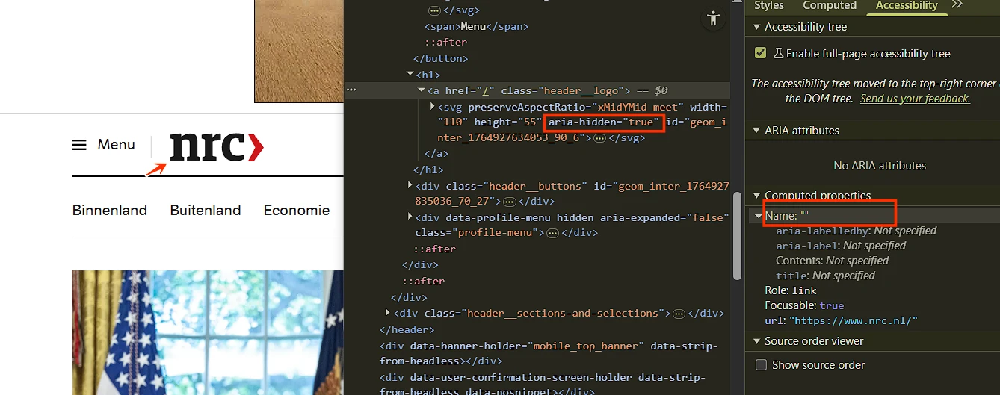
Op alle pagina’s is een link met het ‘NRC’-logo aanwezig. Dit logo is een SVG-afbeelding die met aria-hidden="true" is verborgen voor hulpsoftware. Hierdoor heeft de link geen toegankelijke naam (succescriterium 4.1.2), geen duidelijk doel (succescriterium 2.4.4) en is niet te bedienen met spraakbediening (succescriterium 2.5.3).
Voor bezoekers die de pagina laten voorlezen is deze informatie daardoor niet toegankelijk. Het is niet toegestaan om informatie of functionaliteit te verbergen voor hulpsoftware.
Verwijder het attribuut aria-hidden=”true”. Om de toegankelijkheid van de link verder te verbeteren, kan een title-attribuut worden toegevoegd aan het <a> element met de tekst ‘naar de homepagina’.
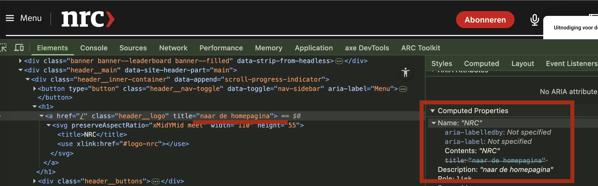
In de footer zijn de volgende teksten niet als kop gemarkeerd: “NRC”, “Mijn NRC”, “Contact” en “NRC-websites”.
Voor bezoekers die hulpsoftware gebruiken heeft een (tussen)kop die er wel uitziet als kop, maar niet als zodanig is gemarkeerd, geen toegevoegde waarde. Gebruikers van hulpsoftware kunnen via koppen de inhoud van een pagina scannen of snel naar een specifieke sectie navigeren. Dit is echter alleen mogelijk wanneer koppen correct in de code zijn opgenomen.
Wanneer koppen uitsluitend visueel als kop zijn vormgegeven (bijvoorbeeld door vetgedrukt tekst), ontstaat bovendien een discrepantie tussen de visuele structuur en de structuur in de code. Hierdoor is de informatiehiërarchie voor hulpsoftware niet correct beschikbaar.
Op deze pagina staat een instructie om zelf te testen of koppen op een webpagina correct zijn gemarkeerd: https://properaccess.nl/zo-controleer-je-de-koppenstructuur-van-je-website/.
Markeer koppen altijd met het juiste HTML-element, op het juiste kopniveau: h1, h2, h3, h4, h5 of h6. In de meeste CMS’en kan het kopniveau worden ingesteld via de content-editor. De juiste HTML-code wordt vervolgens automatisch toegepast.
Let op dat deze koppen boven de <ul> elementen moeten komen te staan.
De menuknop bevindt zich bovenaan de pagina en opent het mobiele menu. Op dit moment kunnen bezoekers die met het toetsenbord navigeren de focus uit het mobiele menu verplaatsen. De toetsenbordfocus komt daarbij op de onderliggende pagina terecht, terwijl het menu geopend blijf.
Bij dit type menu moet de toetsenbordfocus correct worden beheerd. Wanneer het menu actief is, dient de focus binnen het menu te blijven en mag deze niet naar de onderliggende pagina verplaatsen. Dit kan worden opgelost door de focus binnen het menu te houden totdat de bezoeker het menu sluit via de de sluitknop of door op de ESC-toets te drukken. Een alternatief is om het menu automatisch te sluiten zodra de focus het menu verlaat.
Zorg ervoor dat de focus binnen het menu blijft totdat de bezoeker het menu sluit via sluitknop of door op de ESC-toets te drukken. Het menu kan ook automatisch worden gesloten wanneer de focus het menu verlaat.
Wanneer het side menu is geopend, bedekt het menu interactieve elementen op de onderliggende pagina. Deze onderliggende elementen kunnen desondanks toetsenbordfocus ontvangen, terwijl zij door het menu niet zichtbaar zijn.
Elementen die toetsenbordfocus ontvangen moeten altijd zichtbaar zijn. Wanneer dit niet het geval is, kan dit verwarrend zijn voor bezoekers die met het toetsenbord of met een schermlezer navigeren.
Dit kan op een van de volgende manieren worden opgelost:
Het is essentieel dat onderliggende interactieve elementen geen toetsenbordfocus ontvangen zolang het mobiele menu is geopend.
Link naar pagina: https://www.nrc.nl/app/
De tekst “De gratis NRC-app biedt je het laatste nieuws … volgonderwerp(en).” op deze pagina is geen kop, maar is onjuist met een h3-element opgemaakt om de lettergrootte te vergroten.
Het kop-element (h3) is niet betekenisvol gebruikt, maar om een visueel effect te creëren. De tekst die als kop is gemarkeerd, is inhoudelijk geen kop, omdat er geen inhoud onder staat. Kop-elementen zijn bedoeld om structuur te geven aan informatie op een pagina. Gebruikers van schermlezers vertrouwen op koppen om te navigeren en de opbouw van de pagina te begrijpen. Kop-elementen zijn daarom niet bedoeld voor uitsluitend visuele opmaak.
Verwijder het h3-element en gebruik een ander element, zoals een p-element. De gewenste stijl kan met CSS worden toegevoegd.
Op deze pagina staat een instructie om koppen op een webpagina te testen: https://properaccess.nl/zo-controleer-je-de-koppenstructuur-van-je-website/.
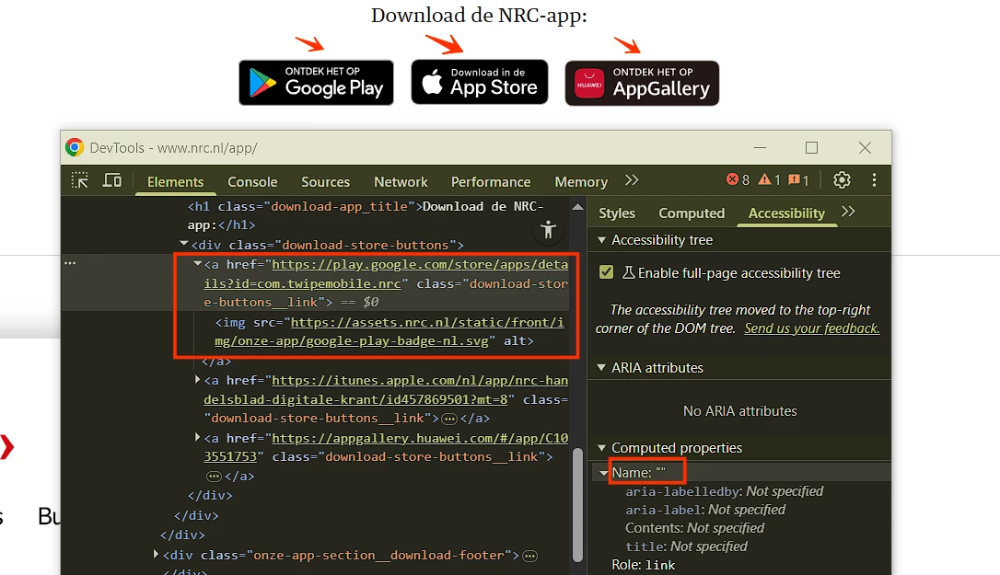
Op deze pagina staan onder de kop “Download de NRC-app:” links met logo’s zonder tekstalternatieven. Wanneer het alt-attribuut van een afbeelding leeg is (alt=""), wordt de afbeelding genegeerd door schermlezers. Een lege alt-tekst geeft aan dat de afbeelding decoratief is en geen informatie overdraagt. In dit geval zijn de logo’s echter informaties en maken zij deel uit van een link.
Hierdoor:
Voeg een alt-tekst toe die de volledige tekst van het logo beschrijft.
Op deze pagina staat onder de header een knop met een driepuntjes-icoon. De toetsenbordfocus is op deze knop niet zichtbaar. De toetsenbordfocus moet altijd zichtbaar zijn op interactieve elementen die focus krijgen via het toetsenbord, zoals links, knoppen en invoervelden. Bezoekers die met het toetsenbord navigeren moeten goed kunnen zien op welk element actief is, zodat zij weten wanneer zij een element kunnen bedienen.
Zorg ervoor dat de toetsenbordfocus zichtbaar is op de genoemde elementen. Op deze pagina staat een instructie om focuszichtbaarheid te testen: https://properaccess.nl/hoe-test-ik-focus-zichtbaarheid/.
Op deze pagina staat onder de header een groep links die visueel als één geheel wordt gepresenteerd. Deze groepering is echter niet vastgelegd in de HTML-structuur. Wanneer het voor een ziende bezoeker duidelijk is dat links bij elkaar horen, moet deze structuur ook in de HTML-code aanwezig zijn.
Dit probleem komt voor op de pagina: https://www.nrc.nl/regio/ onder de kop “Begin direct met lezen”.
Groepeer de links in een semantisch element, zoals een ul, ol of nav.
Link naar pagina: https://www.nrc.nl/index/archief/
Op deze pagina heeft het logo “nrc archief” boven het zoekveld geen tekstalternatief.
Het logo is een SVG-afbeelding. Voeg een title-element met de zichtbare logotekst toe aan de SVG. Informatieve afbeeldingen, zoals logo’s, moeten altijd een tekstalternatief hebben.
legend-element bij fieldset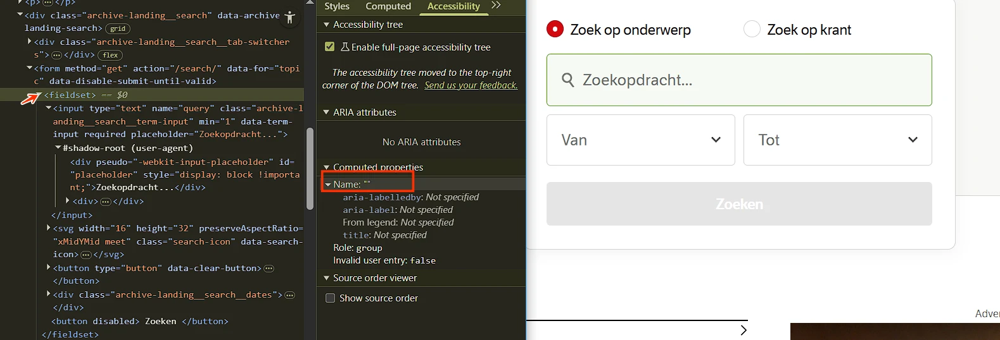
Op deze pagina staat een groep invoervelden, voorafgegaan door de tekst “Zoek op onderwerp”. Hoewel een fieldset wordt gebruikt, ontbreekt het bijbehorende legend-element. Het legend-element is nodig om een toegankelijke naam te geven aan de groep invoervelden.
Voeg binnen de <fieldset> een <legend>-element toe met de tekst “Zoek op onderwerp” (of een inhoudelijk beter passende beschrijving).
Op deze pagina staat onder de kop “Rubriek Uit het archief” witte tekst, bijvoorbeeld “In de jaren vijftig en zestig heette het ‘baldadigheid’: vuurwerkoverlast was er altijd, de vraag om een vuurwerkverbod ook”, op een zwart-witafbeelding. Door variaties in de achtergrondkleur (bijvoorbeeld grijs (#CFCFCF)) is de contrastratio te laag(1,6:1).
Omdat de tekst is groter dan 24px,moet het contrast minimaal 3,0:1 zijn. Op deze pagina staat een instructie om kleurcontrast te testen: https://properaccess.nl/hoe-test-ik-kleurcontrast/.
Op deze pagina staan onder de kop “Rubriek Uit het archief” knoppen met driepuntjes-icoon zonder tekstalternatief. Wanneer een knop uitsluitend uit een afbeelding bestaat, moet de afbeelding de functie van de knop beschrijven.
Voeg de beschrijving toe via een alt-tekst bij het img-element, een title-element bij een svg , een aria-label of een tekst die visueel verborgen is, maar toegankelijk voor de schermlezer.
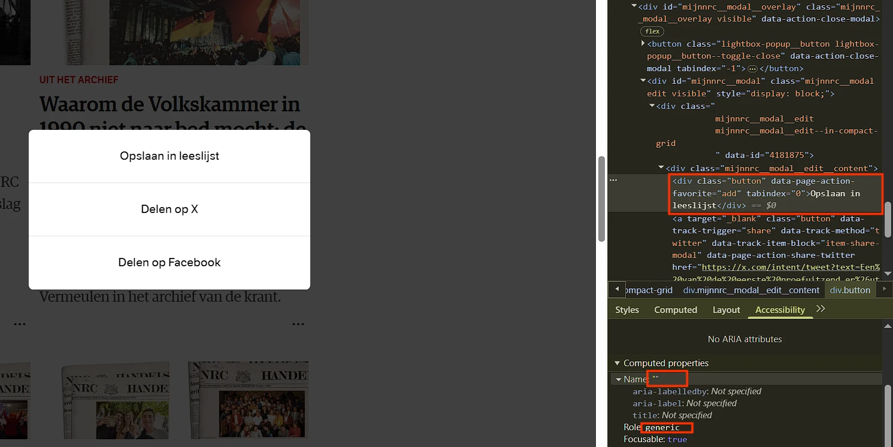
In het modale dialoogvenster dat wordt geopend via de driepuntjes-knoppen staat een element “Opslaan in leeslijst” dat niet de juiste toegankelijke rol heeft en niet met het toetsenbord kan worden bediend.
Gebruik voor dit element het semantische button-element, zodat de juiste rol en toetsenbordbediening automatisch worden ondersteund.
In het modale dialoogvenster is de toetsenbordfocus niet op alle interactieve elementen zichtbaar, bijvoorbeeld op de link “Delen op X”.
Zorg dat de toetsenbordfocus op alle interactieve elementen zichtbaar is. Op deze pagina staat een instructie om focuszichtbaarheid te testen: https://properaccess.nl/hoe-test-ik-focus-zichtbaarheid/.
strong-element onjuist gebruikt in koppenIn koppen zoals “Oud nieuws” en “Over het archief” wordt het strong-element gebruikt binnen “heading”-elementen. Het strong-element heeft een semantische betekenis en mag niet uitsluitend worden gebruikt voor visuele opmaak.
Dit probleem komt onder andere voor op de pagina”
Verwijder het strong-element en gebruik CSS om de gewenste opmaak toe te passen.
Op deze pagina staan onder de kop “Oud nieuws” artikelen verborgen met aria-hidden="true". Hierdoor zijn deze inhoud en functionaliteit niet beschikbaar voor schermlezers, terwijl de elementen nog wel focus kunnen krijgen.
Verwijder het attribuut aria-hidden=”true” van informatieve en interactieve elementen.
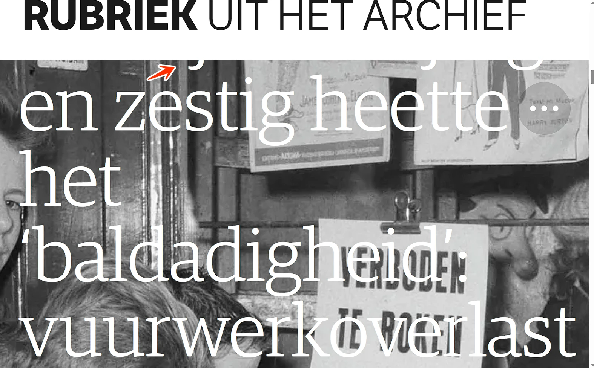
Bij een schermresolutie van 1280 x 1024 pixels en 400% zoom vallen teksten zoals “Uit het archief” en “In de jaren vijftig en zestig heette het ‘baldadigheid’: vuurwerkoverlast was er altijd, de vraag om een vuurwerkverbod ook” gedeeltelijk buiten beeld.
Zorg ervoor dat alle inhoud leesbaar en bruikbaar blijft bij 400% zoom.
Link naar pagina: https://www.nrc.nl/nieuws/2020/07/12/de-grote-hittegids-met-deze-tips-kom-je-warme-dagen-door-a4897365
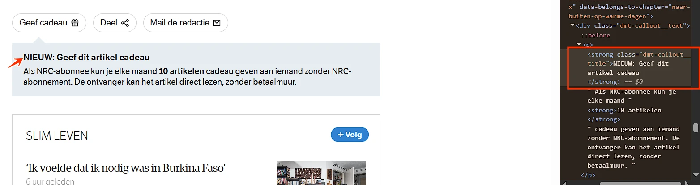
Op deze pagina zijn boven de kop “Slim Leven” teksten aanwezig die koppen zijn, maar de kop-elementen ontbreken. Het strong-element wordt gebruikt om deze teksten er visueel als koppen uit te laten zien. Als voorbeeld:“NIEUW: Geef dit artikel cadeau”.
Het strong-element is niet bedoeld om koppen mee te markeren. Koppen moeten worden gemarkeerd met een kop-element, zoals h2. Alleen als koppen met een kop-element zijn gemarkeerd, kan hulpsoftware deze structuur herkennen.
Dit probleem komt onder andere voor op de pagina:
Verwijder het strong-element en gebruik de juiste kop-elementen om deze koppen te markeren, zoals h2 of h3. Dit element wordt vaak toegevoegd via een knop “B” in een tekstbewerker.
Op deze pagina staat onder de kop “De Grote Hittegids: met deze tips kom je warme dagen door” een knop “Leeslijst” die een dialoogvenster opent. Dit dialoogvenster mist zowel een correcte rol als een toegankelijke naam. Schermlezers kunnen hierdoor niet doorgeven dat het om een dialoogvenster gaat, en wat de inhoud ervan is.
Dit probleem komt onder andere voor op de pagina:
Voeg twee attributen toe aan het dialoogvenster: een aria-label met een duidelijke beschrijving van de inhoud (aria-label="Beschrijving van de inhoud") en role="dialog".
Op deze pagina staat onder de kop “De Grote Hittegids: met deze tips kom je warme dagen door” een knop “Leeslijst” die een dialoogvenster opent. De toetsenbordfocus wordt niet automatisch binnen het dialoogvenster geplaatst wanneer het opent.
Dit probleem komt onder andere voor op de pagina:
Zorg dat de focusvolgorde logisch blijft, door deze naar de nieuwe inhoud te verplaatsen.
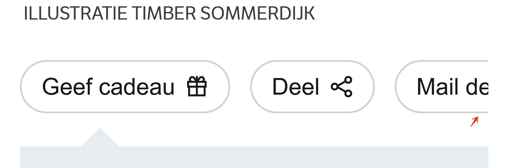
Wanneer deze pagina wordt bekeken bij een schermresolutie van 1280 x 1024 pixels en ingezoomd tot 400%, verdwijnt het artikel gedeeltelijk onder de kop “Onzichtbare watervervuiling” en de knop “Mail de redactie”.
Dit probleem komt voor op de pagina:
Zorg ervoor dat alle nog werkt en leesbaar is tot 400% zoom op een scherm van 1280 x 1024 pixels.
Link naar pagina: https://www.nrc.nl/contact/
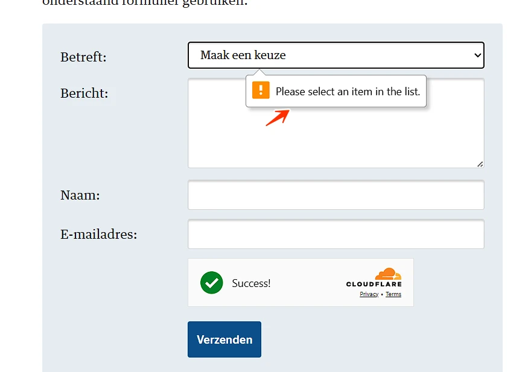
Het formulier maakt gebruik van standaard HTML5-validatie. Deze foutmeldingen verschillen per browser en worden niet altijd volledig of toegankelijk voorgelezen. Bovendien verdwijnen ze automatisch.
Implementeer eigen foutmeldingen die consistent, volledig en toegankelijk zijn.
De succesmelding “Uw bericht is verzonden” heeft een contrastratio van: 4,3:1, wat onvoldoende is voor tekst kleiner dan 24px.
Verhoog het contrast tot minimaal 4,5:1. Op deze pagina staat een instructie kleurcontrast te testen: https://properaccess.nl/hoe-test-ik-kleurcontrast/.
Na het verzenden van het formulier verschijnt een succesmelding zonder paginavernieuwing. De focus wordt niet verplaatst en de melding wordt niet automatisch voorgelezen door schermlezers.
Voeg aria-live="polite" of role="status" toe aan de melding. Meer informatie over role="status" is te vinden op de pagina: https://www.w3.org/WAI/WCAG21/Techniques/aria/ARIA22.
Op deze pagina staan onder de koppen “NRC”, “Redactie Amsterdam”, “Redactie Den Haag” definitielijsten. De dl-elementen hebben directe kindelementen die niet zijn toegestaan, namelijk h5.
Verplaats de ongeldige h5-elementen uit de definitielijst en plaats ze erboven, buiten de lijst.
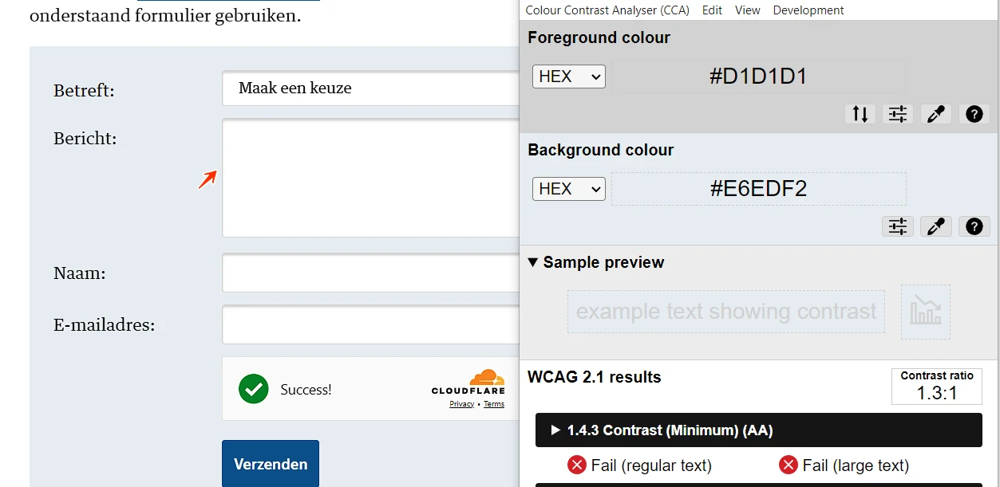
Op deze pagina staat onder de kop “Contact met de redactie” een formulier. De contrastverhouding tussen de grijze randen van de invoervelden (#D1D1D1) en de lichtblauwe achtergrond van de pagina (#E6EDF2) is 1,3:1.
Randen van interactieve elementen, zoals invoervelden, moeten minimaal een contrast van 3,0:1 hebben met de achtergrond.
Link naar pagina: https://www.nrc.nl/krant/2025/11/14/#101
Op deze pagina staan onder de header links met pijlpictogrammen. Tekstalternatieven ontbreken, waardoor deze links niet toegankelijk zijn. De afbeelding is interactief, maar heeft geen tekstalternatief. Dit probleem hangt ook samen met succescriterium 4.1.2, omdat de links geen toegankelijke namen hebben, en met succescriterium 2.4.4, omdat de doelen van de links niet duidelijk zijn.
Geef de afbeelding een tekstalternatief dat het linkdoel beschrijft, zodat gebruikers van een schermlezer weten waar de link naartoe leidt.
Op deze pagina staat onder de header een select-element. De toetsenbordfocus is op dit select-element niet zichtbaar.
De toetsenbordfocus moet altijd zichtbaar zijn op interactieve elementen zoals links, knoppen en invoervelden die met het toetsenbord focus kunnen krijgen. Bezoekers die met het toetsenbord navigeren moeten goed kunnen zien op welke plek van de pagina zij zich bevinden.
Zorg ervoor dat de toetsenbordfocus zichtbaar is op de genoemde elementen. Op deze pagina staat een instructie om focuszichtbaarheid te testen: https://properaccess.nl/hoe-test-ik-focus-zichtbaarheid/.
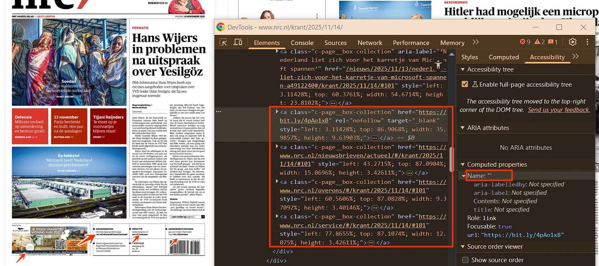
Op deze pagina staat een digitale versie van de krant. Elke kolom bevat links, waarvan sommige geen toegankelijke namen hebben. Hierdoor is voor gebruikers van een schermlezer onduidelijk wat de bestemming of de functie van de link is. Dit probleem hangt ook samen met succescriterium 2.4.4, omdat de doelen van de links niet duidelijk zijn.
Geef de links een toegankelijke naam, bijvoorbeeld via linktekst, een aria-label of een andere techniek. Op deze pagina staat een instructie om toegankelijke namen te testen: https://properaccess.nl/sc-4-1-2-wat-betekent-naam-rol-waarde/.
Op deze pagina verschijnt tijdens het scrollen door de krant een modaal dialoogvenster om een abonnement af te sluiten. Dit dialoogvenster heeft geen toegankelijke rol. Schermlezers kunnen daardoor niet aangeven dat het om een dialoogvenster gaat en kunnen de inhoud minder goed duiden.
Dit probleem komt onder andere voor op de pagina:
Voeg een role="dialog" toe aan het dialoogvenster.
Op deze pagina verschijnt tijdens het scrollen door de krant een modaal dialoogvenster om een abonnement af te sluiten. De toetsenbordfocus wordt niet automatisch in het dialoogvenster geplaatst wanneer het opent.
Dit probleem komt onder andere voor op de pagina:
Zorg ervoor dat de focusvolgorde logisch blijft door de toetsenbordfocus bij het openen naar het dialoogvenster (of het eerste focusbare element daarin) te verplaatsen.
strong-element is gebruikt voor opmaakOp deze pagina verschijnt tijdens het scrollen door de krant een modaal dialoogvenster. In dit dialoogvenster wordt het strong-element gebruikt voor opmaak, bijvoorbeeld in de link “Al abonnee? Inloggen”.
Het strong-element heeft een semantische betekenis: het geeft aan dat tekst extra nadruk krijgt. Gebruik dit element daarom niet uitsluitend voor een visueel effect (vetgedrukte tekst).
Dit probleem komt voor op de pagina:
Verwijder de onnodige strong-elementen en gebruik CSS om de tekst vet weer te geven. Een alternatief is het gebruik van een <b>-element voor uitsluitend visuele opmaak.
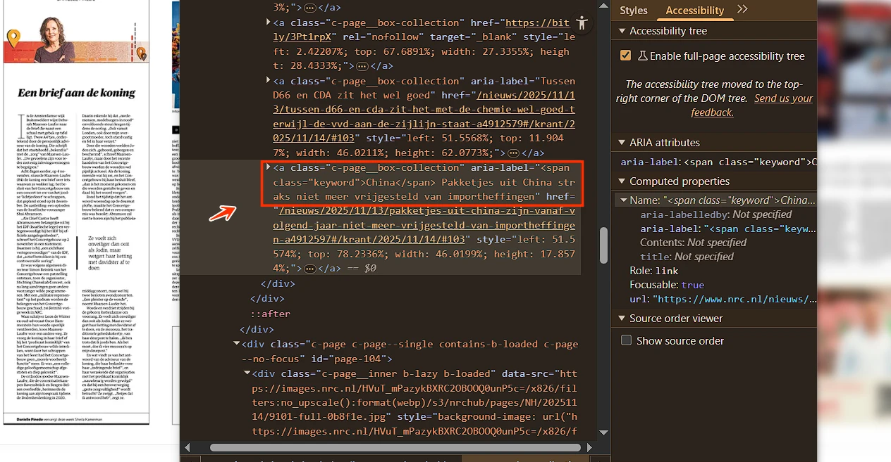
Op deze pagina bevat een linktekst HTML-code, bijvoorbeeld "<span class="keyword">China</span> Pakketjes uit China straks niet meer vrijgesteld van importheffingen”. Hierdoor is de linktekst onleesbaaris het doel van de link onduidelijk.
Zorg ervoor dat de linktekst geen HTML-code bevat. Gebruik een duidelijke, leesbare en beschrijvende linktekst.
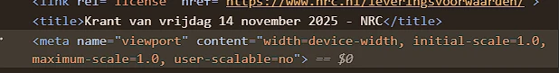
Op alle pagina’s staan in het head-element van de HTML-code de waarden maximum-scale=1 en user-scalable=no. Hierdoor kan in sommige browsers niet worden ingezoomd.
Verwijder deze code.
Op deze pagina staan op een klein scherm knoppen en links met iconen boven de digitale krant zonder tekstalternatieven. Dit geldt bijvoorbeeld voor een link met een kalendericoon of een knop met een monitoricoon. De afbeelding is interactief, maar heeft geen tekstalternatief.
Dit probleem hangt ook samen met succescriterium 4.1.2, omdat de links en knoppen geen toegankelijke namen hebben, en met succescriterium 2.4.4, omdat de doelen onduidelijk zijn.
Geef de iconen een tekstalternatief dat het doel of de functie beschrijft, zodat gebruikers vano schermlezers weten waar de link of knop voor dient.
Link naar pagina: https://www.nrc.nl/ebook/
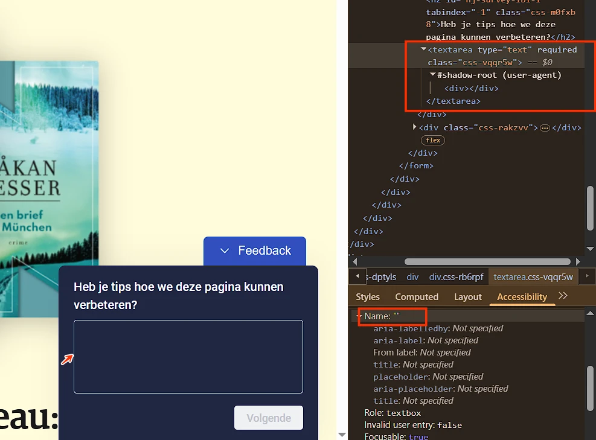
Op deze pagina, onderaan, staat een knop “Feedback” die een dialoogvenster opent met een invoerveld. Dit invoerveld heeft geen toegankelijke naam. Hierdoor is het voor gebruikers van een schermlezer niet duidelijk wat in het veld moet worden ingevuld.
Dit probleem hangt ook samen met succescriterium 2.5.3, omdat de zichtbare tekst niet in een toegankelijke naam wordt weergegeven en het invoerveld daardoor niet met een spraakbediening kan worden bediend.
Dit probleem komtvoor op de pagina https://www.nrc.nl/nieuwsbrieven/ na het klikken op de “Inschrijven”-knoppen onder de koppen “De hele dag op de hoogte. Kies je moment(en).”, “Kies de thema's van jouw interesse” en onder andere koppen.
Dit is op te lossen door het invoerveld een toegankelijke naam te geven, bijvoorbeeld door een label-element aan het veld te koppelen.
Op deze pagina, bij de kop “Een speciaal decembercadeau: kies één e-book uit drie,” staat een animatie van roterende boekomslagen die automatisch afspeelt en niet kan worden gepauzeerd of gestopt. Dit probleem doet zich voor op de pagina https://www.nrc.nl/regio/ onder de kop “Begin direct met lezen”.
Zorg ervoor dat er een mogelijkheid is de animatie te stoppen, pauzeren of verbergen. Dit geldt voor alle bewegende, knipperende, scrollende of automatisch actualiserende content die tegelijk met andere informatie wordt getoond, automatisch start en langer dan vijf seconden speelt.
Op deze pagina, onder de kop “Kies een e-book”, bevatten meerdere links de tekst “Omschrijving”. Deze tekst beschrijft het linkdoel niet voldoende. Linkteksten die meerdere keren op een pagina voorkomen en nietszeggend zijn, geven onvoldoende informatie over de bestemming.
Maak de linktekst uniek en beschrijvend door bijvoorbeeld ‘Omschrijving’ aan te vullen met de titel van het betreffende onderdeel. Als de context visueel duidelijk is, kan de aanvullende tekst visueel worden verborgen. Bijvoorbeeld: ‘Omschrijving (Schaduwweduwe))’.
<a href=””>Omschrijving <span class=”sr-only”> Schaduwweduwe</span></a>
Link naar pagina: https://www.nrc.nl/
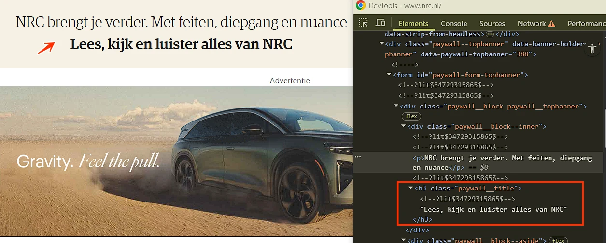
Op de pagina’s met meerdere artikelen is de leesvolgorde niet logisch. Wanneer de artikelen van boven naar beneden worden voorgelezen, is het niet duidelijk bij welk artikel de datum hoort.
Alle content die bij een kop hoort, moet in de HTML onder de kop staan. Momenteel is dat niet het geval.
Dit probleem komt onder andere voor op de pagina:
Plaats alle inhoud die bij een specifieke kop hoort in de code onder die kop. Dit zorgt voor een logische structuur. De visuele vormgeving mag hiervan afwijken.
De homepage bevat een iframe met reclame zonder een beschrijving die door een schermlezer kan worden voorgelezen. Het title-attribuut ontbreekt.
Dit probleem komt voor bij andere advertenties op de website.
Iframes moeten zijn voorzien van een toegankelijke naam, meestal via het title-attribuut. In deze beschrijving moet worden aangegeven welk type inhoud wordt weergegeven (bijvoorbeeld een podcast of video) en waar die inhoud over gaat. De beschrijving moet uniek en betekenisvol zijn. Op basis hiervan kunnen bezoekers die hulpsoftware gebruiken bepalen of het zinvol is om de inhoud van het iframe te verkennen.
Dit probleem komt onder andere voor op de pagina:
Voeg eentitle-attribuut toe aan het iframe-element met een tekst die duidelijk maakt welk type inhoud het iframe bevat, en waar deze inhoud over gaat.
De volgende bevinding is een advies, omdat het gaat om inhoud van derden die onder een uitzondering valt.
De homepage bevat iframes met advertenties die niet met het toetsenbord zijn te bedienen. Sommige bezoekers navigeren uitsluitend met een toetsenbord en gebruiken geen muis. Voor deze groep moeten alle interactieve onderdelen van de website bedienbaar zijn met het toetsenbord. Hieronder vallen onder andere links, knoppen, formulieren, keuzelijsten, tabbladen, iframes, sliders en accordeons.
Dit probleem komt onder andere voor op de pagina:
Zorg ervoor dat alle interactieve elementen bedienbaar zijn met het toetsenbord.
De volgende bevinding is een advies, omdat het gaat om inhoud van derden die onder een uitzondering valt.
De homepage bevat iframes met advertenties waarin logo’s worden getoond, zoals het logo “Capgemini”. De bijbehorende alt-tekst luidt echter alleen “Logo”. Dit probleem komt voor bij andere advertenties op de website.
In het tekstalternatief is daardoor niet alle tekst opgenomen die in het logo zichtbaar is. Dit is wel vereist, zodat bezoekers die het logo niet kunnen zien precies weten welke tekst het bevat.
Dit probleem komt onder andere voor op de pagina:
Pas de alt-tekst aan zodat deze de volledige tekst van het logo bevat, bijvoorbeeld: “Capgemini”.
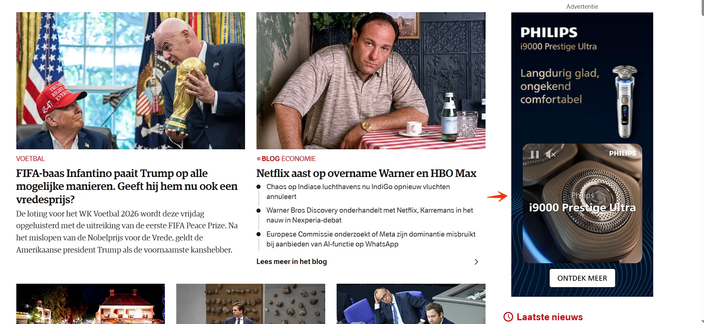
De homepage bevat advertenties waarin video’s automatisch worden afgespeeld en niet kunnen worden gepauzeerd of gestopt.
Automatisch afspelende video’s kunnen storend zijn voor bezoekers met een cognitieve beperking. Bewegende inhoud kan voortdurend afleiden, waardoor het lezen van andere content op de pagina wordt bemoeilijkt.
Dit probleem komt onder andere voor op de pagina:
Extra toelichting: Er zijn vier succescriteria die altijd van toepassing zijn op alle inhoud van de pagina, ook op onderdelen die niet noodzakelijk zijn om aan de toegankelijkheidsregels te voldoen. Het niet naleven van deze succescriteria kan de werking en bruikbaarheid van de gehele pagina beïnvloeden.
Meer informatie hierover is te vinden op: (https://www.w3.org/TR/UNDERSTANDING-WCAG20/conformance.html).
Zorg voor een mechanisme waarmee bezoekers automatisch afspelende multimedia kunnen stoppen, pauzeren of verbergen. Dit geldt voor alle bewegende, knipperende, scrollende of automatisch actualiserende content die automatisch start, gelijktijdig met andere informatie wordt getoond en langer dan vijf seconden speelt.
Op de homepage staan aanklikbare artikelen. De bijbehorende links hebben geen toegankelijke naam en worden door schermlezers als lege links voorgelezen. Hierdoor begrijpen bezoekers die een schermlezer gebruiken niet wat de bestemming of de functie van de link is.
Dit probleem valt onder succescriterium 4.1.2 (naam, rol, waarde). Daarnaast is succescriterium 2.4.4 van toepassing, omdat het doel van de link niet duidelijk is. Ook succescriterium 2.5.3 is van toepassing, omdat de zichtbare tekst niet voorkomt in een toegankelijke naam en de link daardoor niet kan worden bediend met spraakbediening.
Dit probleem komt onder andere voor op de pagina: https://www.nrc.nl/index/archief/.
Dit probleem ontstaat doordat binnen een <a> element een <header> element wordt gebruikt. Door dit <header>element te vervangen door een <div> element, kan de toegankelijke naam correct worden bepaald. Als je dit doet, krijgt de link een toegankelijke naam. Maar deze naam bestaat nu uit de hele tekst van de teaser en wordt dus heel lang. Een betere oplossing is het plaatsen van het <a> element binnen het <h3> element. Je kunt het klikgebiet met JS groter maken.
Op de volgende pagina staat een instructie om zelf te testen of een element een toegankelijke naam heeft: https://properaccess.nl/sc-4-1-2-wat-betekent-naam-rol-waarde/.
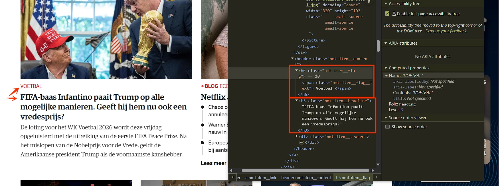
Op de homepage staan artikelen waarin een kop van niveau 6 direct wordt gevolgd door een kop van een hoger niveau (h3)’. Dit is bijvoorbeeld te zien bij “Voetbal” en “FIFA-baas Infantino paait Trump op alle mogelijke manieren. Geeft hij hem nu ook een vredesprijs?”.
Dit probleem doet zich onder meer voor onder de koppen “Laatste nieuws”, “Meest gelezen” en “OPINIE & COLUMNS”.
Wanneer twee koppen van hetzelfde niveau direct onder elkaar staan zonder inhoud ertussen, is één van de koppen niet op correct toegepast. Direct onder een h3-element mag een h4-element of andere content volgen, maar niet opnieuween h3-element of een h2-element.
Dit probleem komt voor op de pagina: https://www.nrc.nl/index/archief/.
Pas de kopstructuur aan, zodat de kop-elementen de inhoudsstructuur correct weergeven. De meest geschikte oplossing is het verwijderen van h6-elementen.
Op deze pagina staat een instructie om zelf koppen op een webpagina te testen: https://properaccess.nl/zo-controleer-je-de-koppenstructuur-van-je-website/.
Op de homepage staat onder de kop “Laatste nieuws” grijze tekst (#8C8C8C) op een witte achtergrond, bijvoorbeeld “KOPERDIEFSTAL”. De contrastratio is te laag: 3,4:1.
Dit probleem doet zich voor onder de kop “NIEUWSTE AFLEVERINGEN NRC-PODCASTS” bij de datumteksten, bijvoorbeeld “29 nov 2025”. Deze bevinding is alleen van toepassing in het lichte thema van de browser. In de donkere modus komt dit probleem niet voor.
Deze tekst is kleiner dan 24px en niet vetgedrukt. Daarom moet het contrast minimaal 4,5:1 zijn.
Op deze pagina staat een instructie om kleurcontrast te testen: https://properaccess.nl/hoe-test-ik-kleurcontrast/.
Op de homepage wordt onder de kop “NIEUWSTE AFLEVERINGEN NRC-PODCASTS” een carrousel gebruikt met knoppen om tussen slides te wisselen. De toegankelijke namen geven onvoldoende informatie over de functie van de knoppen.
Dit probleem komt onder andere voor op de pagina:
Pas de toegankelijke namen aan, bijvoorbeeld naar “vorige slide” en “volgende slide”.
Daarnaast kan de caroussel als een aparte regio worden gemarkeerd, zodat duidelijk is dat alle knoppen binnen deze regio bij de carrousel horen. Dit kan door een aria-label toe te voegen aan het section-element.
Op de homepage staan knoppen met witte tekst “Volg” op een blauwe achtergrond (#3081D1). De contrastratio is te laag: 4:1.
Dit probleem komt voor op de pagina: https://www.nrc.nl/nieuws/2020/07/12/de-grote-hittegids-met-deze-tips-kom-je-warme-dagen-door-a4897365.
Deze tekst is kleiner dan 24px en niet vetgedrukt. Daarom moet het contrast minimaal 4,5:1 zijn.
Op deze pagina staat een instructie om kleurcontrast te testen: https://properaccess.nl/hoe-test-ik-kleurcontrast/.
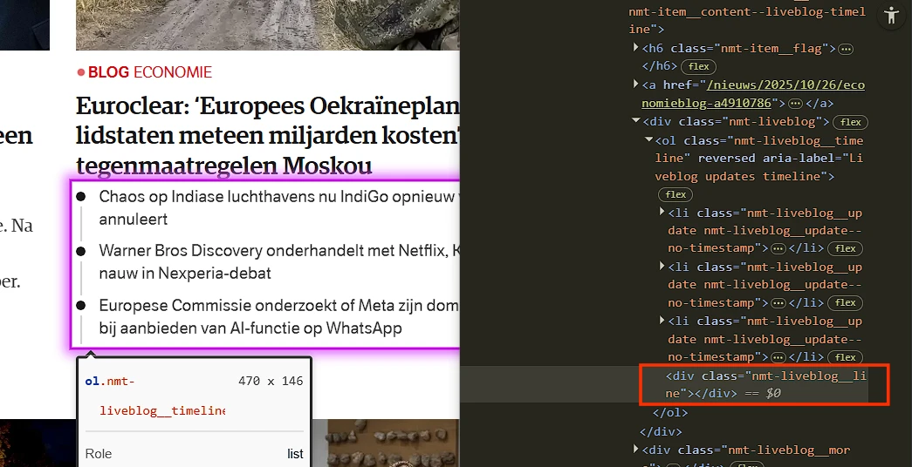
Op de homepage staat onder de kop “Euroclear: ‘Europees Oekraïneplan kan lidstaten meteen miljarden kosten’ door tegenmaatregelen Moskou” een lijst. Deze lijst heeft directe kindelementen die niet zijn toegestaan: div.
Tekst die eruitziet als een opsomming moet ook als opsomming in de code worden gemarkeerd. Hiervoor worden de HTML-elementen ol (lijst met cijfers) of ul (lijst met opsommingstekens) gebruikt. Meestal is hiervoor een knop beschikbaar in de content-editor van een CMS. Hulpsoftware kan dan de structuur van de inhoud bepalen. Bovendien kondigen schermlezers vooraf het aantal items in de lijst aan.
Meer informatie over correcte lijsten is te vinden op: https://properaccess.nl/waarom-correcte-html-lijsten-het-verschil-maken-in-toegankelijkheid/.
Verwijder de niet-toegestane directe kindelementen (div) uit de lijst enzorg ervoor dat alle opsommingen correct zijn gemarkeerd in de code.
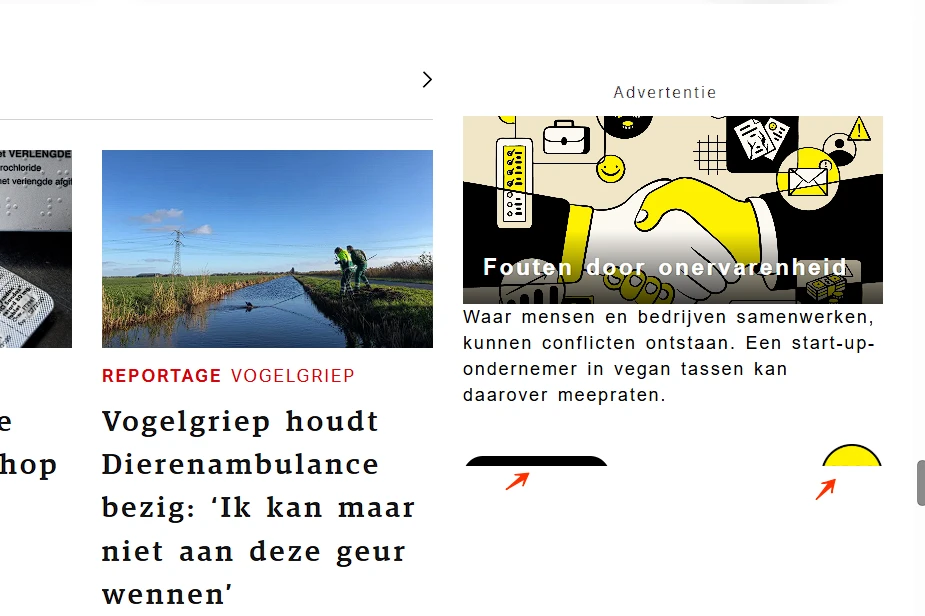
Wanneer bezoekers de tekstafstand aanpassen volgens succescriterium 1.4.12, worden de tekst en het logo van de advertentie onder de kop “Fouten door onervarenheid” gedeeltelijk onzichtbaar en onleesbaar.
Sommige bezoekers passen de weergave van de tekst aan, bijvoorbeeld door het vergroten van de afstand tussen regels, letters of woorden. Wanneer deze aanpassingen worden toegepast zoals beschreven in succescriterium 1.4.12, moet alle inhoud leesbaar blijven.
Maak de hoogte en de breedte van de containers waarin de tekst staat responsief.
Meer informatie over het testen van dit succescriterium is te vinden op: https://properaccess.nl/sc-1-4-12-wat-betekent-tekstafstand/.
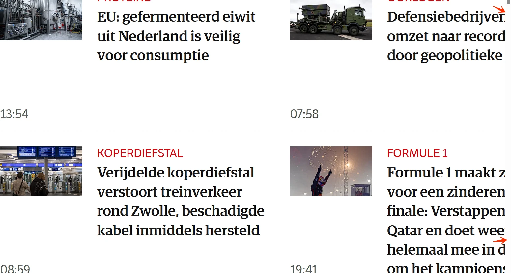
Wanneer deze pagina wordt bekeken met een schermresolutie van 1280 x 1024 pixels en tot 200% wordt ingezoomd, raakt de tekst van nieuwsartikelen deels buiten beeld, bijvoorbeeld onder de kop “Laatste nieuws”.
Zorg ervoor dat alle inhoud leesbaar blijft tot 200% zoom op een schermresolutie van 1280 x 1024 pixels.
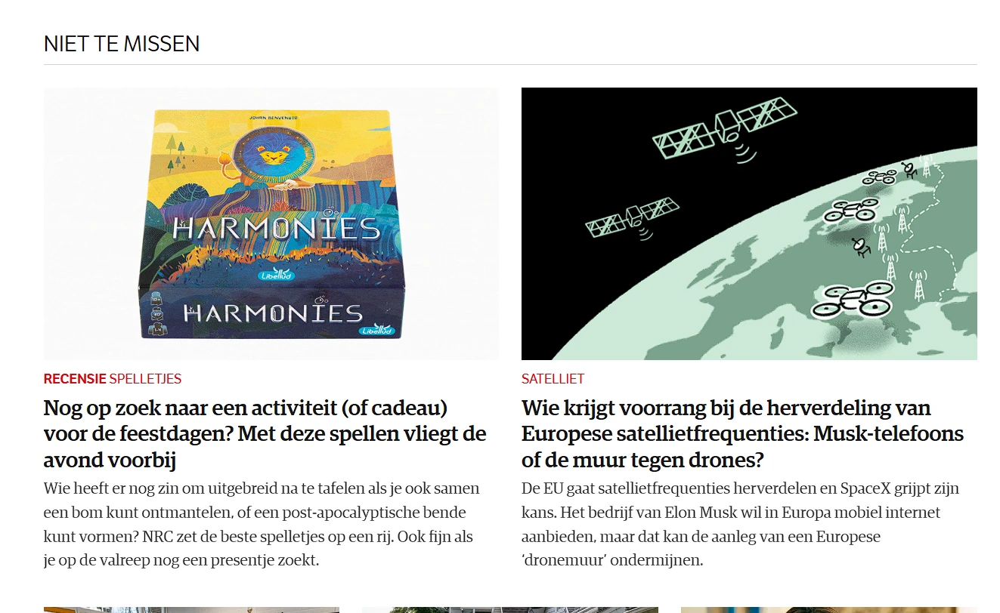
Op de homepage staat onder de kop “Niet te missen” een animatie die automatisch wordt afgespeeld en niet kan worden gepauzeerd of gestopt.
Automatisch afspelende animaties kunnen storend zijn voor bezoekers met een cognitieve beperking. Bewegende inhoud leidt af van andere informatie op de pagina.
Zorg voor een mechanisme waarmee automatisch afspelende multimedia kunnen worden gestopt, gepauzeerd of verborgen. Dit geldt voor alle bewegende content die automatisch start en langer dan vijf seconden speelt.
Link naar pagina: https://login.nrc.nl/login?service=https%3A%2F%2Fwww.nrc.nl%2Flogin%2F
lang-attribuut ontbreektOp deze pagina ontbreekt het lang-attribuut op het html-element. Hierdoor kan voorleessoftware de pagina niet in de correcte taal voorlezen.
Dit probleem komt onder andere voor op de pagina:
Zorg ervoor dat het lang-attribuut aanwezig is op het html-element en dat dit attribuut de juiste taalcode bevat, bijvoorbeeld lang=”nl”.
Het logo bovenaan de pagina heeft geen tekstalternatief.
Dit probleem hangt ook samen met:
Dit probleem komt onder ander voor op de pagina:
Dit logo is een SVG-afbeelding. Voeg een title-element met zichtbare tekst van het logo toe aan de SVG-afbeelding. Er zijn andere oplossingen mogelijk.
autocomplete-attribuutIn het formulier staan invoervelden die persoonsgegevens verzamelen(bijvoorbeeld e-mail). Ze hebben netjes het attribuut auditcomplete gekregen, maar de waarde is onjuist: “on”.
Invoervelden voor persoonlijke informatie zoals achternaam, e-mailadres of telefoonnummer moeten het autocomplete-attribuut hebben met de juiste waarde (“name”, “tel”, “email” en meer). Hierdoor kunnen browsers en hulpsoftware helpen bij het invoeren, bijvoorbeeld door de velden automatisch in te vullen.
Dit probleem komt onder andere voor op de pagina:
Gebruik het autocomplete-attribuut voor alle velden waar persoonlijke informatie in moet worden gevuld.
Meer informatie over autocomplete en welke waarden moeten worden gebruikt, is te vinden op: https://www.w3.org/Translations/WCAG22-nl/#input-purposes.
Op deze pagina staat een knop met witte tekst “Inloggen” op een groene achtergrond (#57923A). De contrastratio is te laag: 3,8:1.
Dit probleem komt voor op de pagina:
Deze tekst is kleiner dan 24px en niet vetgedrukt., Daarom moet het contrast minimaal 4,5:1 zijn.
Op deze pagina staat een instructie om kleurcontrast te testen: https://properaccess.nl/hoe-test-ik-kleurcontrast/.
Op deze pagina is de toetsenbordfocus niet zichtbaar op de link “Inloggen” en de link om met Google in te loggen.
De toetsenbordfocus moet altijd zichtbaar zijn op interactieve elementen zoals links, knoppen en invoervelden die met het toetsenbord focus kunnen krijgen. Bezoekers die met het toetsenbord navigeren moeten goed kunnen zien waar de focus zich bevindt. Anders is niet duidelijk wanneer een element met Enter kan worden geactiveerd. Dit probleem komt onder andere voor op de pagina:
Zorg dat de toetsenbordfocus zichtbaar is op de genoemde elementen. Op deze pagina staat een instructie om de focuszichtbaarheid te testen: https://properaccess.nl/hoe-test-ik-focus-zichtbaarheid/.
Op deze pagina staat onder het formulier een groep knoppen waarbij de toetsenbordfocus wordt aangegeven door een verandering van de achtergrondkleur van de knoppen van lichtgrijs naar grijs (#E5E5E5).
Het gebruik van alleen kleur om focus aan te geven is niet voldoende. Voor bezoekers met een visuele beperking of kleurenblindheid is zo’n subtiele kleurverandering vaak niet duidelijk genoeg. Ook bezoekers die met het toetsenbord navigeren moeten goed kunnen zien waar de focus zich bevindt. Daarvoor is een duidelijk zichtbare focusindicator zijn.
Voeg een extra visuele aanduiding toe, bijvoorbeeld een dikkere rand, een onderstreping of een verandering van achtergrond.
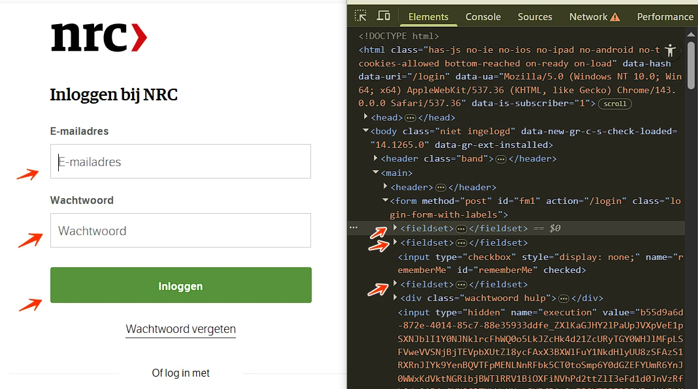
Op deze pagina staat een formulier waarvan elk element (invoervelden en de knop “Inloggen”) in een afzonderlijk fieldset-element is geplaatst. Dit element wordt hier gebruikt voor groepering, maar deze elementen vormen geen afzonderlijke groepen. Het element wordt daardoor gebruikt voor een ander doel dan waarvoor het is bedoeld en kan gebruiker van een schermlezerin verwarring brengen.
Dit probleem komt onder andere voor op de pagina:
Verwijder de fieldset-elementen en gebruik in plaats daarvan een div.
Link naar pagina: https://login.nrc.nl/create
Op deze pagina verschijnt bij het invoeren van een nieuw wachtwoord rode tekst (#FF0000) op een witte achtergrond, bijvoorbeeld “te kort”. De contrastratio is te laag: 4:1.
Deze tekst is kleiner dan 24px en niet vetgedrukt. Daarom moet het contrast minimaal 4,5:1 zijn.
Op deze pagina staat een instructie om kleurcontrast te testen: https://properaccess.nl/hoe-test-ik-kleurcontrast/.
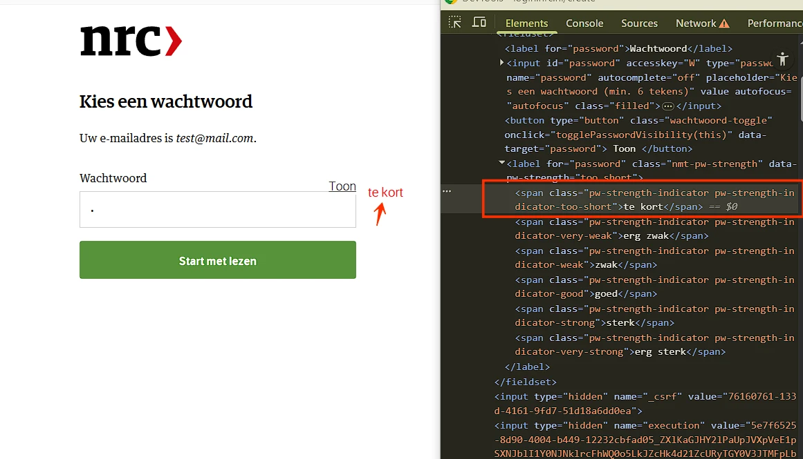
Op deze pagina verschijnt bij het invoeren van een nieuw wachtwoord een tekst, bijvoorbeeld “te kort”. Hulpsoftware kondigt deze melding niet aan.
Wanneer de foutmelding geen toetsenbordfocus krijgt op het moment dat deze verschijnt, krijgen gebruikers van een schermlezer geen melding.
Voeg aria-live="polite" toe aan de melding. De melding wordt dan automatisch voorgelezen zodra deze verschijnt.
Op deze pagina heeft het invoerveld “Wachtwoord” een bijbehorende instructie in de placeholdertekst “Kies een wachtwoord (min. 6 tekens)”. Deze instructie verdwijnt echter zodra er tekst wordt ingevoerd.
Verplaats de instructie, zodat deze altijd zichtbaar is naast het invoerveld.
Link naar pagina: https://www.nrc.nl/nieuws/2025/09/19/amerikaanse-politiek-19-september-a4906609
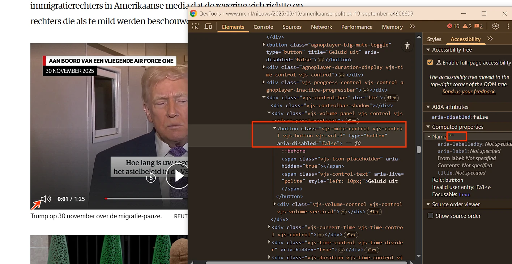
Op deze pagina staat onder de kop “Asielaanvragen” een video. Sommige knoppen in deze video hebben geen toegankelijke naam, bijvoorbeeld de volumeknop en andere bedieningselementen. Hierdoor is het voor gebruikers vaneen schermlezer onduidelijk wat de bestemming of de functie van de knop is.
Dit probleem komtvoor op de pagina:
Geef de knoppen een toegankelijke naam, bijvoorbeeld via knoptekst, een aria-label of een andere techniek. Op deze pagina staat een instructie om toegankelijke namen te testen: https://properaccess.nl/sc-4-1-2-wat-betekent-naam-rol-waarde/.
Op deze pagina staat onder de kop “Asielaanvragen” een video. De toetsenbordfocus is niet zichtbaar op alle knoppen in deze video. De toetsenbordfocus moet altijd zichtbaar zijn op interactieve elementen zoals links, knoppen en invoervelden die met het toetsenbord focus kunnen krijgen. Bezoekers die met het toetsenbord navigeren moeten goed kunnen zien op welke plek van de pagina zij zich bevinden.
Dit probleem komt onder andere voor op de pagina:
Zorg ervoor dat de toetsenbordfocus zichtbaar is op de genoemde elementen. Op deze pagina staat een instructie om focuszichtbaarheid te testen: https://properaccess.nl/hoe-test-ik-focus-zichtbaarheid/.
Op deze pagina staat onder de kop “New York Times begint rechtszaak tegen Pentagon vanwege nieuwe regels voor journalisten” een grijs selectievakje (#CFCFCF) met de tekst “Ontvang notificaties voor dit liveblog” op een witte achtergrond. De kleurcontrastverhouding is te laag: 1,6:1.
Dit probleem komt voor op de pagina: https://www.nrc.nl/nieuws/2025/11/04/formatieblog-4-november-a4911826?t=1764772650.
De randen van interactieve elementen, zoals invoervelden en selectievakjes, moeten minimaal een contrast van 3,0:1 hebben met de achtergrond.
Op deze pagina staat boven elke kop een knop met een deelicoon. Deze knop opent een dialoogvenster. Dit dialoogvenster heeft geen toegankelijke naam. Hulpsoftware kan daardoor niet doorgeven wat de inhoud van het dialoogvenster is.
Dit probleem komt onder andere voor op de pagina:
Voeg een aria-label toe aan het dialoogvenster met een duidelijke beschrijving van de inhoud.
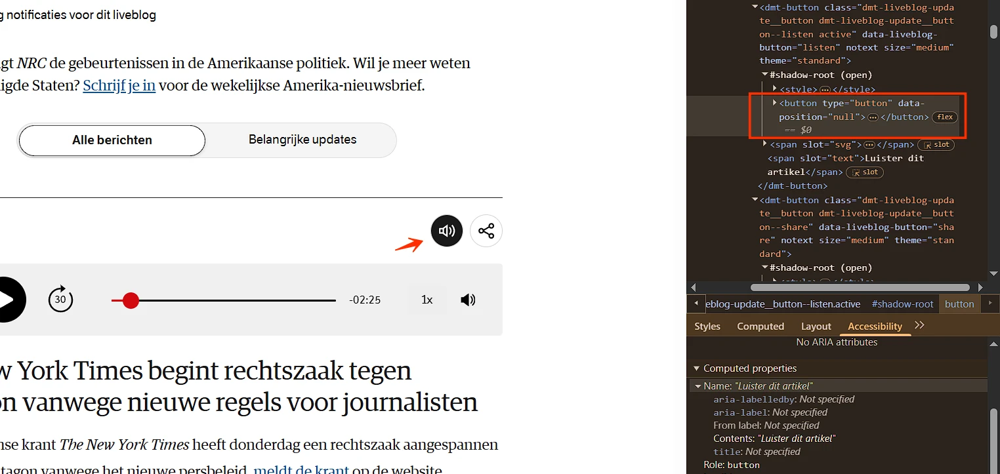
Op deze pagina staat boven elke kop een knop met een geluidsicoon. Deze knop opent en sluit de speler om het artikel te beluisteren. Hoewel de open of gesloten status visueel duidelijk is, wordt deze niet programmatisch aan schermlezers doorgegeven.
Dit probleem komt onder andere voor op de pagina:
Dit is op te lossen door een aria-expanded-attribuut toe te voegen aan de knoppen waarmee de extra inhoud wordt geopend en gesloten.
Op deze pagina staat onder de kop “Kantoren leeggeruimd” een afbeelding. Het tekstalternatief van de afbeelding herhaalt de tekst onder de afbeelding (“Het Pentagon in Arlington, near the American capital Washington D.C.”). Hierdoor leest de schermlezer dezelfde informatie twee keer voor.
Dit probleem komt onder andere voor op de pagina:
Laat het alt-attribuut leeg om herhaling van de tekst te voorkomen (alt=””).
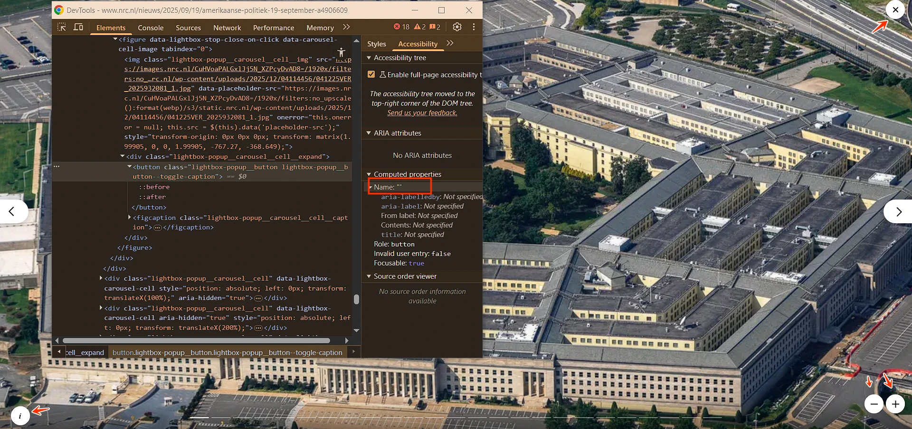
Op deze pagina staan afbeeldingen met een knop om deze in volledig scherm te openen, bijvoorbeeld onder de kop “Asielaanvragen”. In deze modus zijn er knoppen met iconen zonder toegankelijke naam, zoals de knoppen “i”, “x”, “+” en “−”. Hierdoor is voor gebruikers van een schermlezer onduidelijk wat de bestemming of functie van de knop is.
Dit probleem komt onder andere voor op de pagina: https://www.nrc.nl/nieuws/2025/11/04/formatieblog-4-november-a4911826?t=1764772650; https://www.nrc.nl/nieuws/2024/12/21/testpagina-voor-digitale-toegankelijkheid-deel-1-a4913685.
Geef de knoppen een toegankelijke naam, bijvoorbeeld via knoptekst, een aria-label of een andere techniek. Op deze pagina staat een instructie om toegankelijke namen te testen: https://properaccess.nl/sc-4-1-2-wat-betekent-naam-rol-waarde/.
Op deze pagina staat onder de kop “Asielaanvragen” een afbeelding met een knop om deze in volledig scherm te openen. Wanneer deze modus wordt geopend, wordt de toetsenbordfocus niet automatisch naar de nieuwe inhoud verplaatst. Dit probleem treedt ook op bij andere afbeeldingen.
Dit probleem komt onder andere voor op de pagina:
Zorg ervoor dat de focusvolgorde logisch blijft door de toetsenbordfocus bij het openen naar de nieuwe inhoud te verplaatsen.
Op deze pagina staat onder de kop “Asielaanvragen” een afbeelding met een knop om deze in volledig scherm te openen. In deze modus is de toetsenbordfocus niet zichtbaar op alle knoppen met iconen. Dit probleem treedt ook op bij andere afbeeldingen.
De toetsenbordfocus moet altijd zichtbaar zijn op interactieve elementen zoals links, knoppen en invoervelden die met het toetsenbord focus kunnen krijgen. Bezoekers die met het toetsenbord navigeren moeten goed kunnen zien op welke plek van de pagina zij zich bevinden.
Dit probleem komt onder andere voor op de pagina:
Zorg ervoor dat de toetsenbordfocus zichtbaar is op de genoemde elementen. Op deze pagina staat een instructie om focuszichtbaarheid te testen: https://properaccess.nl/hoe-test-ik-focus-zichtbaarheid/.
Op deze pagina staat onder de kop “Asielaanvragen” een afbeelding met een knop om deze in volledig scherm te openen. In deze modus is er een knop met een “i”-icoon die extra inhoud opent en sluit. Hoewel de open of gesloten status visueel duidelijk is, wordt deze niet programmatisch aan schermlezers doorgegeven. Dit probleem treedt op bij andere afbeeldingen.
Dit probleem komt voor op de pagina: https://www.nrc.nl/nieuws/2025/11/04/formatieblog-4-november-a4911826?t=1764772650.
Dit is op te lossen door een aria-expanded-attribuut toe te voegen aan de knoppen waarmee de extra inhoud wordt geopend of gesloten.
Op deze pagina zijn de pagineringslinks onderaan visueel gegroepeerd, maar deze groepering ontbreekt in de HTML-structuur. Als het voor een ziende bezoeker duidelijk is dat pagineringslinks bij elkaar horen, dan moet die structuur ook in de HTML-code aanwezig zijn.
Dit probleem komt voor op de pagina: https://www.nrc.nl/nieuws/2025/11/04/formatieblog-4-november-a4911826?t=1764772650.
Neem de links van de paginering op in een <ul>, <ol> of <nav>-element, zodat de groep ook programmatisch wordt vastgelegd.
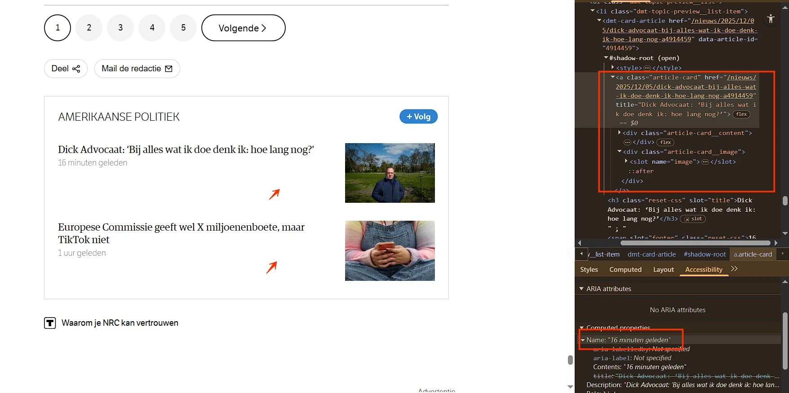
Op deze pagina staan onder de koppen “Amerikaanse politiek” en “Lees verder” links naar artikelen. Deze links bevatten teksten, zoals “16 minuten geleden”, “1 uur geleden” en vergelijkbare tijdsaanduidingen. Deze teksten beschrijven de bestemming van de link niet en kunnen tot ambiguïteit leiden, onder andere voor gebruikers van schermlezers.
Dit probleem hangt ook samen met succescriterium 2.5.3, omdat de zichtbare tekst niet in de toegankelijke naam voorkomt en de links daardoor niet met spraakbediening kunnen worden bediend.
Dit probleem komt onder andere voor op de pagina:
Maak duidelijk waar de link naartoe leidt, bijvoorbeeld door (een deel van) de artikelkop aan de linktekst of toegankelijke naam toe te voegen.
Op deze pagina staat onder de koppen “Amerikaanse politiek” en “Lees verder” grijze tekst (#7E7E7E) op een witte achtergrond, bijvoorbeeld “49 minuten geleden” en “9 uur geleden”. De kleurcontrastverhouding is te laag: 4:1. Deze tekst verandert bovendien dynamisch.
Dit probleem komt onder andere voor op de pagina:
Op deze pagina staat een pop-up met de knop “Ja, graag”. De witte tekst op de groene achtergrond (#149718) heeft een te lage contrastratio van 3,8:1. Dit probleem komt voor op de pagina: https://www.nrc.nl/nieuws/2025/11/04/formatieblog-4-november-a4911826?t=1764772650.
Omdat deze tekst is kleiner dan 24px en niet vetgedrukt, moet het contrast minimaal 4,5:1 zijn. Op deze pagina staat een instructie om kleurcontrast te testen: https://properaccess.nl/hoe-test-ik-kleurcontrast/.
Link naar pagina: https://login.nrc.nl/create?service=https://www.nrc.nl/login/
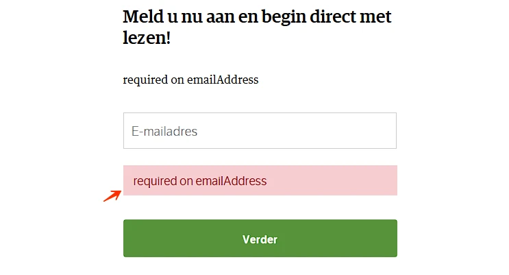
Er is geen taalattribuut op deze pagina. Als dit attribuut niet aanwezig is, kan voorleessoftware de pagina niet in de correcte taal voorlezen. De software weet dan niet wat de primaire taal van de pagina is.
Wanneer lang=”nl” aan deze pagina wordt toevoegd, ontstaat het volgende probleem: de foutmelding in het formulier is in het Engels (“required on emailAddress”), terwijl alle overige inhoud van de pagina in het Nederlands is.
Vertaal deze foutmelding naar het Nederlands.
Link naar pagina: https://www.nrc.nl/nieuwsbrieven/
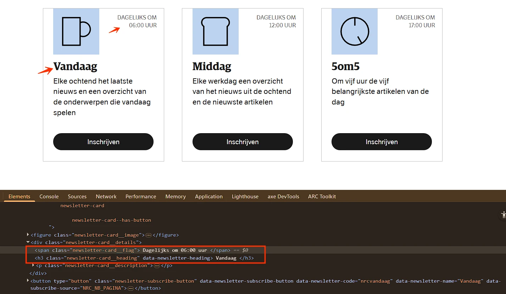
Op deze pagina is de volgorde van HTML-elementen binnen artikelen niet logisch. De tekst staat boven de koppen, bijvoorbeeld boven de kop “Vandaag” staat de tekst “Dagelijks om 06:00 uur”. De huidige volgorde is: tekst, kop, tekst.
Als deze artikelen van boven naar beneden worden voorgelezen door een schermlezer, is niet duidelijk welke inhoud (afbeelding en/of tekst) bij welke kop hoort. Dat kan verwarrend zijn voor gebruikers van een schermlezer.
Dit is op te lossen door alle inhoud die bij een kop hoort onder die kop te plaatsen. Dit zorgt voor een logische structuur. De visuele vormgeving mag afwijken.
Op deze pagina openen de knoppen met de tekst “Inschrijven” dialoogvensters. Deze dialoogvensters hebben geen toegankelijke naam. Hulpsoftware kan daardoor niet doorgeven welke inhoud het dialoogvenster heeft.
Voeg een aria-label toe aan het dialoogvenster met een duidelijke beschrijving van de inhoud.
Link naar pagina: https://www.nrc.nl/nieuwsbrieven/#modal=consent-preferences
Geen nieuwe bevindingen.
Link naar pagina: https://www.nrc.nl/over-ons/
Op deze pagina staat onder de kop “NRC is meer dan ooit noodzakelijk” een animatie die om de paar seconden een nieuwe afbeelding toont. Deze animatie kan niet worden gestopt, gepauzeerd of verborgen. Bewegende content kan storend zijn voor bezoekers met een cognitieve beperking. Bewegende inhoud kan afleiden terwijl andere tekst op de pagina wordt gelezen.
Zorg ervoor dat er een manier is waarmee bewegende content kan worden gestopt, gepauzeerd of verborgen. Dit geldt voor alle bewegende, knipperende, scrollende of automatisch actualiserende content die tegelijk met andere informatie wordt getoond, automatisch start en langer dan vijf seconden speelt.
Op deze pagina wordt een kop van niveau 2 direct gevolgd door een andere kop van hetzelfde niveau. Zie bijvoorbeeld “NRC informeert waar noodzakelijk, duidt waar nuttig, en onthult waar nodig. We dienen lezers en luisteraars die bereid zijn om na te denken.” en “Onze journalistiek”. De tweede tekst is inhoudelijk geen kop.
Dit probleem komt onder andere voor op de pagina:
Verwijder het tweede h2.
Op deze pagina staan onder de koppen “Contact” en “Waarom je NRC kan vertrouwen” secties met inhoud die kan worden in-en uitgeklapt. Deze secties zijn gecodeerd als dl-elementen. Deze elementen zijn niet bedoeld voor gebruik. In deze implementatie zijn meerdere problemen aangetroffen.
Dit probleem komt onder andere voor op de pagina:
Pas een toegankelijk patroon toe voor het bouwen van een accordion
em-element is gebruikt voor opmaak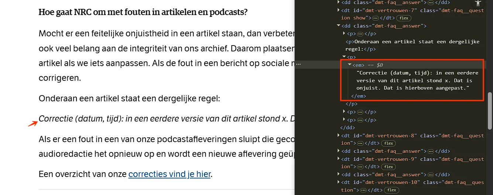
Op deze pagina wordt het em-element misbruikt voor opmaakdoeleinden, bijvoorbeeld in de sectie met verborgen inhoud “Hoe gaat NRC om met fouten in artikelen en podcasts?” bij de tekst “Correctie (datum, tijd): in een eerdere versie van dit artikel stond x. Dat is onjuist. Dat is hierboven aangepast.”
Het em-element heeft een semantische waarde en geeft aan dat tekst nadruk krijgt. Het element is daarom niet geschikt om alleen een visueel effect te bereiken (cursieve tekst).
Verwijder de onnodige em-elementen en gebruik CSS om de tekst schuingedrukt te maken. Het <i>-element kan worden gebruikt om tekst cursief te maken.
Op deze pagina staan onder de koppen “Contact” en “Waarom je NRC kan vertrouwen” secties met verborgen inhoud. De toetsenbordfocus komt terecht op de links binnen deze secties, ook wanneer deze zijn gesloten. Deze volgorde van toetsenbordfocus is niet logisch.
Interactieve elementen zoals knoppen en links moeten in een logische volgorde focus krijgen. Logisch betekent dat de focusvolgorde aansluit op de visuele volgorde. Wanneer dit niet het geval is, wordt de navigatie van het toetsenbord bemoeilijkt.
Dit probleem komt onder andere voor op pagina:
Zorg ervoor dat de volgorde van de toetsenbordfocus logisch is.
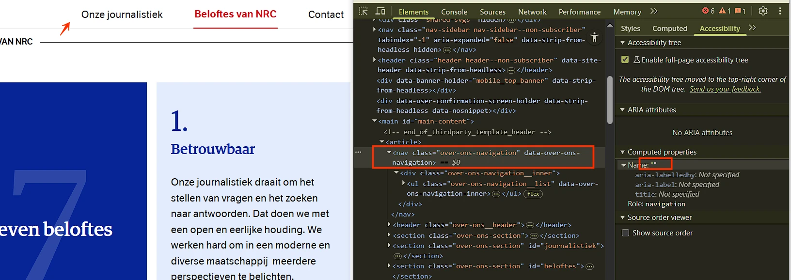
Op deze pagina staat bovenaan extra sticky navigatie. Het doel van deze navigatie is niet duidelijk voor gebruikers van een schermlezer.
Geef, wanneer een pagina meer dan één nav-element bevat, elke navigatie een eigen naam. Daardoor kan gemakkelijker tussen navigatiegebieden worden genavigeerd. Zie deze techniek: https://www.w3.org/WAI/WCAG22/Techniques/html/H97.
Link naar pagina: https://www.nrc.nl/404
Op deze pagina staat lichtgrijze tekst (#A3A3A3) “https://www.nrc.nl/404” op een witte achtergrond. De contrastratio is te laag: 2,5:1.
Deze tekst is kleiner dan 24px en niet vetgedrukt. Daarom moet het contrast minimaal 4,5:1 zijn. Op deze pagina staat een instructie om kleurcontrast te testen: https://properaccess.nl/hoe-test-ik-kleurcontrast/.
Link naar pagina: https://www.nrc.nl/puzzels/precies-vier/2025/11/21/
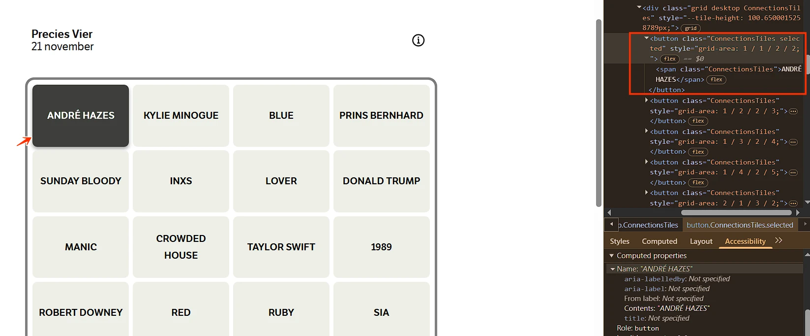
Op deze pagina staan knoppen in het spel. Deze knoppen hebben meerdere toestanden (bijvoorbeeld ingedrukt en niet ingedrukt), maar er is geen programmatische indicatie van de huidige toestand. Hulpsoftware kan deze informatie niet doorgeven.
Dit probleem komt voor op de pagina: https://www.nrc.nl/puzzels/sudoku/2025/11/14/?t=1763123783.
Zorg ervoor dat de toestand van de knop ook in de code wordt weergegeven. Bijvoorbeeld door aria-pressed toe te voegen met de waarde “true” wanneer de knop is ingedrukt, en “false” wanneer de knop niet is ingedrukt.
Op deze pagina verschijn in het spel, na het selecteren van vier verkeerde woorden en het klikken op de knop met het vinkje, een schudanimatie. Deze animatie geeft aan dat de combinatie woorden onjuist is. De informatie is niet programmatisch beschikbaar en daardoor niet toegankelijk voor gebruikers van schermlezers. Een vergelijkbaar probleem treedt op bij het selecteren van de juiste woorden: visueel verschijnt een groep met de correcte woorden.
Er is geen kant-en-klare oplossing op basis van deze beschrijving. Dit vraagt om een brainstormsessie.
Op deze pagina, in het spel, verschijnt bij het selecteren van vier correcte woorden een groep met een titel en de correcte woorden. Dit is een statusbericht dat automatisch door schermlezers niet moet worden aangekondigd wanneer het verandert. De benodigde code om deze functionaliteit te activeren ontbreekt echter. Dit probleem komt voor onder de tekst “Pogingen resterend”, bij het aantal resterende pogingen.
Statusberichten moeten automatisch worden voorgelezen door schermlezers zodra ze verschijnen of veranderen. Dit is op te lossen door een aria-live-attribuut aan de melding toe te voegen.
Op deze pagina, in het spel, zijn er knoppen waarvan de toetsenbordfocus niet zichtbaar is. De toetsenbordfocus moet altijd zichtbaar zijn op interactieve elementen zoals links, knoppen en invoervelden die met het toetsenbord focus kunnen krijgen. Bezoekers die met het toetsenbord navigeren moeten goed kunnen zien op welke plek van de pagina zij zich bevinden. Anders is niet duideijk wanneer op Enter moet worden gedrukt om een knop of link te bedienen.
Zorg ervoor dat de toetsenbordfocus zichtbaar is op de genoemde elementen. Op deze pagina staat een instructie om focuszichtbaarheid te testen: https://properaccess.nl/hoe-test-ik-focus-zichtbaarheid/.
Op deze pagina, in het spel, verschijnen na alle onsuccesvolle pogingen de correcte groepsopties. Deze correcte groepsopties verdwijnen echter na korte tijd. Hierdoor hebben sommige bezoekers niet genoeg tijd om de juiste antwoorden te lezen.
Dit is op te lossen door een mogelijkheid toe te voegen om de tijdslimiet te verwijderen of te verlengen (tot maximaal 20 uur).
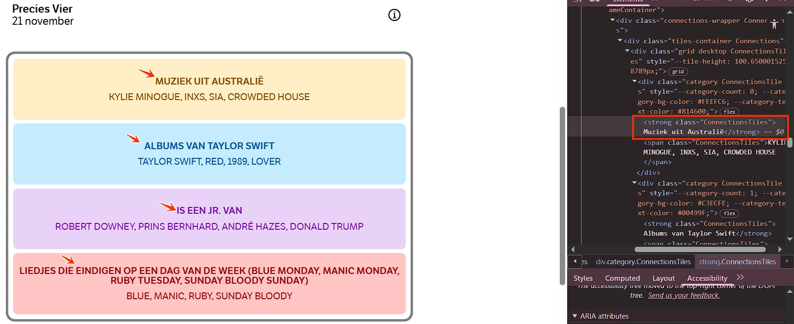
Op deze pagina, in het spel, verschijnen na alle onsuccesvolle pogingen de correcte groepsopties. In deze opties zijn sommige teksten koppen, maar de kop-elementen ontbreken. Het strong-element wordt gebruikt om deze teksten er visueel als koppen uit te laten zien. Alsvoorbeeld: “Muziek uit Australië”.
Het strong-element is niet bedoeld om koppen mee te markeren. Koppen moeten worden gemarkeerd met een kop-element, zoals h2. Ze zorgen voor structuur in een tekst. Alleen als koppen met een kop-element zijn gemarkeerd, kan hulpsoftware deze structuur herkennen.
Verwijder het strong-element en gebruik de juiste kop-elementen om de koppen te markeren, zoals h2 of h3. Dit element wordt vaak toegevoegd via een knop “B” in een tekstbewerker.
Link naar pagina: https://www.nrc.nl/puzzels/
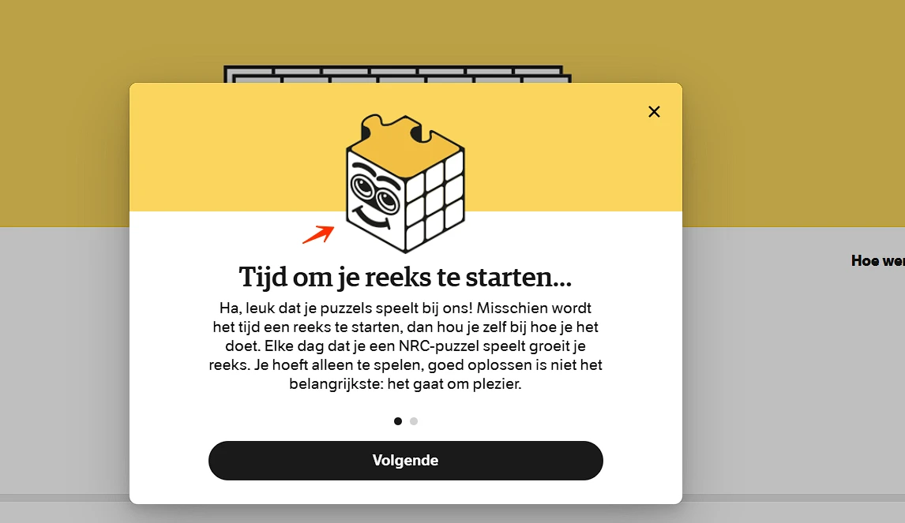
Wanneer deze pagina voor het eerst zonder in te loggen wordt bezocht, verschijnt er een dialoogvenster met een kubusanimatie die automatisch wordt afgespeeld en niet kan worden gepauzeerd of gestopt. Bewegende content kan storend zijn voor mensen met een cognitieve beperking. De bewegende inhoud zorgt voortdurend voor afleiding terwijltekst op de pagina wordt gelezen.
Dit probleem komt onder andere voor op de pagina:
Er moet een manier zijnom dit soort content te stoppen, pauzeren of verbergen. Dit geldt voor alle bewegende, knipperende, scrollende of automatisch actualiserende content die tegelijk met andere informatie wordt getoond, automatisch start en langer dan vijf seconden speelt.
Wanneer deze pagina voor het eerst zonder in te loggen wordt bezocht, verschijnt er een dialoogvenster met een knop “x”. De toegankelijke naam “x” beschrijft niet de functie van de knop. Daardoor is onduidelijk dat hiermee het dialoogvenster wordt gesloten.
Dit probleem komt voor op de pagina: https://www.nrc.nl/puzzels/sudoku/2025/11/14/?t=1763123783.
Geef de knop een duidelijke naam die de functie beschrijft, bijvoorbeeld: “Sluiten”.
Op deze pagina staan onder de koppen “Uitgelichte puzzels” en “Meer puzzels” spellen. Wanneer op een spel wordt geklikt, opent er een dialoogvenster. Dit dialoogvenster heeft geen toegankelijke naam. Hulpsoftware kan daardoor niet doorgeven wat de inhoud van het dialoogvenster is.
Dit probleem komt onder andere voor op de pagina:
Voeg een aria-label toe aan het dialoogvenster met een duidelijke beschrijving van de inhoud.
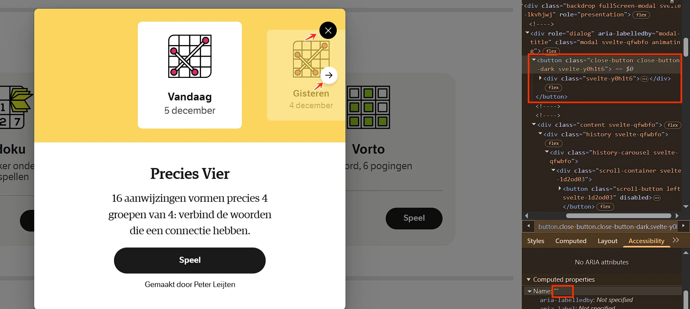
Op deze pagina staan onder de koppen “Uitgelichte puzzels” en “Meer puzzels” spellen. Wanneer op een spel wordt geklikt, opent een dialoogvenster met knoppen die alleen uit iconen bestaan, zoals het “x”-icoon en pijltjesiconen. Deze iconen hebben geen tekstalternatief. Wanneer een knop uitsluitend uit een afbeelding bestaat, moet de alternatieve tekst de functie van de knop beschrijven.
Dit probleem hangt ook samen met succescriterium 4.1.2, omdat de knoppen geen toegankelijke naam hebben.
Dit probleem komt onder andere voor op de pagina:
Voeg de beschrijving toe via een alt-tekst bij het img-element of een title-element bij een svg , een aria-label of een tekst die visueel verborgen is, maar toegankelijk voor de schermlezer.
Op deze pagina staan onder de koppen “Uitgelichte puzzels” en “Meer puzzels” spellen. Wanneer op een spel wordt geklikt, opent een dialoogvenster. In dit dialoogvenster staan links die andere interactieve, focusbare elementen bevatten, zoals knoppen.
Interactieve elementen die genest zijn binnen andere interactieve elementen (zoals button- of a-elementen) kunnen soms leiden tot extra focuspunten. Dit kan resulteren in een leeg focuspunt: een situatie waarin met Tab-toets naar een element kan worden genavigeerd, terwijl de schermlezer geen naam, rol of status voorleest. Dit is verwarrend bezoekers die afhankelijk zijn van hulpsoftware.
Zorg ervoor dat interactieve elementen geen interactieve, focusbare kindelementen bevatten.
Op deze pagina is de toetsenbordfocus niet zichtbaar op de knop “Hoe werkt het?”. De toetsenbordfocus moet zichtbaar zijn op interactieve elementen zoals links, knoppen en invoervelden die met het toetsenbord focus kunnen krijgen. Bezoekers die met het toetsenbord navigeren moeten goed kunnen zien op welke plek van de pagina zij zich bevinden.
Dit probleem komt onder andere voor op de pagina:
Zorg ervoor dat de toetsenbordfocus zichtbaar is op alle interactieve elementen. Op deze pagina staat een instructie om focuszichtbaarheid te testen: https://properaccess.nl/hoe-test-ik-focus-zichtbaarheid/.
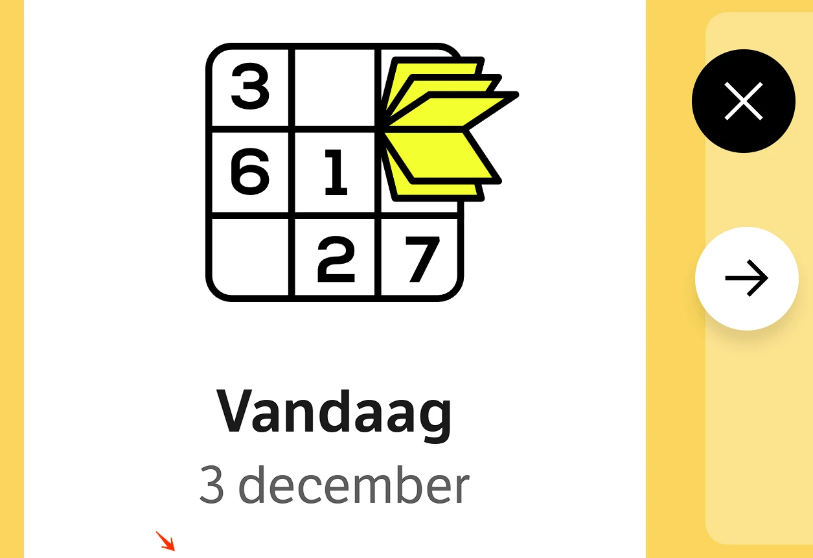
Op deze pagina staan onder de koppen “Uitgelichte puzzels” en “Meer puzzels” spellen. Wanneer op een spel wordt geklikt, opent een dialoogvenster. In dit dialoogvenster zijn, bij een schermresolutie van 1280 x 1024 pixels en 400% zoom, sommige interactieve elementen niet zichtbaar en niet bedienbaar, bijvoorbeeld de link “NRC-sudoku”.
Zorg ervoor dat de functionaliteiten bruikbaar blijven bij 400% zoom op een scherm van 1280 x 1024 pixels.
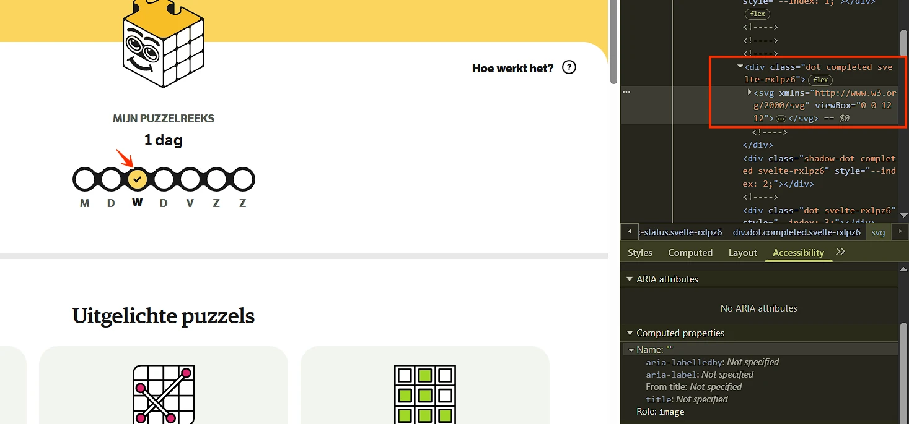
Op deze pagina staat onder de tekst “Mijn puzzelreeks” een informatieve afbeelding met de dagen van de week en vinkjes die aangeven op welke dagen is gespeeld. Voor deze afbeelding ontbreekt een tekstalternatief. Afbeeldingen die informatie overdragen moeten een betekenisvolle alternatieve tekst hebben, waarin de relevante informatie uit de afbeelding wordt beschreven.
Deze informatieve afbeelding is een SVG-afbeelding. Voeg een title-element met beschrijvende tekst toe aan de SVG-afbeelding.
Link naar pagina: https://www.nrc.nl/regio/
Op deze pagina, boven de footer, staat een link met een logo. Deze link heeft geen toegankelijke naam. Hierdoor begrijpen gebruikers van een schermlezerniet wat de bestemming of functie van de link is.
Dit probleem hangt ook samen met succescriterium 2.4.4 (doel van de link is onduidelijk) en succescriterium 2.5.3 (zichtbare tekst komt niet terug in de toegankelijke naam, waardoor de link niet via spraak kan worden bediend).
Geef de link een toegankelijke naam via linktekst, een aria-label of een andere passende techniek. Op deze pagina staat een instructie om toegankelijke namen te testen: https://properaccess.nl/sc-4-1-2-wat-betekent-naam-rol-waarde/.
Link naar pagina: https://www.nrc.nl/puzzels/sudoku/2025/11/14/?t=1763123783
Canvas-element bevat geen tekstalternatief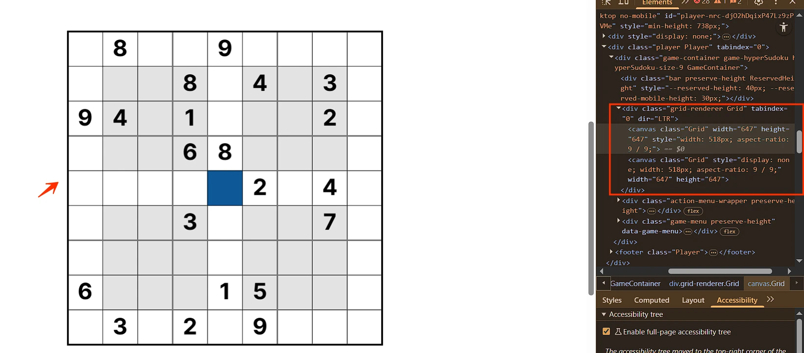
Op deze pagina is een spel weergegeven als canvasafbeelding, maar het element heeft geen tekstalternatief.
Hulpsoftware krijgt geen informatie over de inhoud van dit element. Dit kan worden opgelost door tekst aan dit element toe te voegen. Ook de attributen title, aria-label of aria-labelledby kunnen worden gebruikt om een tekstalternatief te bieden. Andere oplossingen zijn mogelijk.
Een canvas-element moet altijd een tekstalternatief hebben. Deze pagina's geven goede voorbeelden van hoe canvas toegankelijk kan worden gemaakt: https://www.html5accessibility.com/tests/canvas.html en https://pauljadam.com/demos/canvas.html.
Op deze pagina, onder het veld met het spel, staan knoppen met cijfers en bedieningsknoppen. De toetsenbordfocus is op deze knoppen niet zichtbaar. De toetsenbordfocus moet altijd zichtbaar zijn op interactieve elementen zoals links, knoppen en invoervelden die met het toetsenbord focus kunnen krijgen.
Bezoekers die met het toetsenbord navigeren moeten goed kunnen zien op welke plek van de pagina zij zich bevinden. Anders is niet duidelijk wanneer op Enter moet worden gedrukt om een knop of link te bedienen.
Dit probleem komt onder andere voor op de pagina:
Zorg ervoor dat de toetsenbordfocus zichtbaar is op de genoemde elementen. Op deze pagina staat een instructie om focuszichtbaarheid te testen: https://properaccess.nl/hoe-test-ik-focus-zichtbaarheid/.
Op deze pagina is een knop aanwezig met de zichtbare tekst “Herstart”. De toegankelijke naam van de knop is “Opnieuw”, afkomstig van het aria-label.
Het gebruik van het aria-label-attribuut overschrijft alle andere methoden om elementen te benoemen. Schermlezers en spraakherkenningssoftware gebruiken de naam die in het aria-label staat (de “toegankelijke naam”). Als deze toegankelijke naam afwijkt van de zichtbare tekst, wijkt de tekst die hulpsoftware gebruikt af van wat zichtbaar is op de knop. Hierdoor kan de knop minder goed bedienbaar zijn met spraaksoftware.
Dit probleem komt voor op de pagina: https://www.nrc.nl/nieuws/2024/12/21/testpagina-voor-digitale-toegankelijkheid-deel-1-a4913685 bij de knop “roguelike”, waarvan de toegankelijke naam “(Open een annotatie bij deze zin)” is.
Zorg ervoor dat de toegankelijke naam de zichtbare tekst bevat, en zet deze tekst het liefst vooraan in de naam. De toegankelijke naam mag ook precies hetzelfde zijn als de zichtbare tekst.
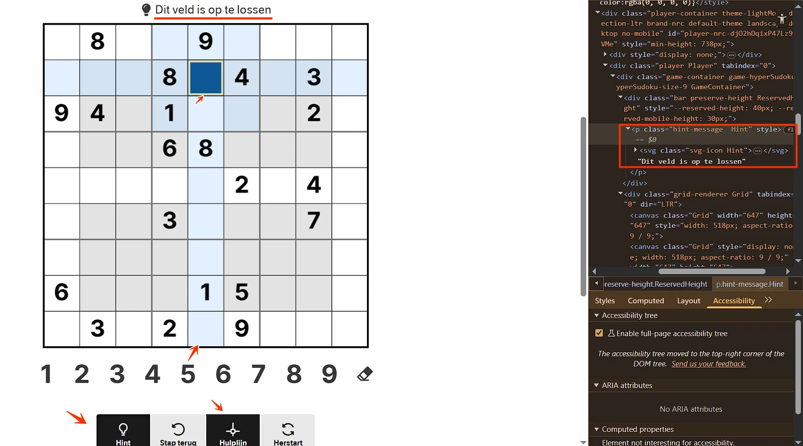
Op deze pagina worden bij het activeren van de knoppen “Hint” en “Hulplijn” de velden in het spel visueel gemarkeerd. Deze informatie staat echter niet in de code en is daardoor niet beschikbaar voor gebruikers van een schermlezer.
Dat kun je bijvoorbeeld bereiken met een visueel verborgen tekst of een aria-label.
Op deze pagina verschijnt bij het activeren van de knop “Hint” het bericht “Dit veld is op te lossen”. Dit is een statusbericht. Het bericht krijgt geen focus en wordt niet door de schermlezer voorgelezen. Daarom is extra code nodig zodat schermlezers het statusbericht automatisch voorlezen zodra het verschijnt.
Voeg aria-live="polite" of role="status" toe aan de melding. Meer informatie over role="status" is te vinden op de pagina: https://www.w3.org/WAI/WCAG21/Techniques/aria/ARIA22.
Link naar pagina: https://www.nrc.nl/nieuws/2024/12/21/testpagina-voor-digitale-toegankelijkheid-deel-2-a4912961
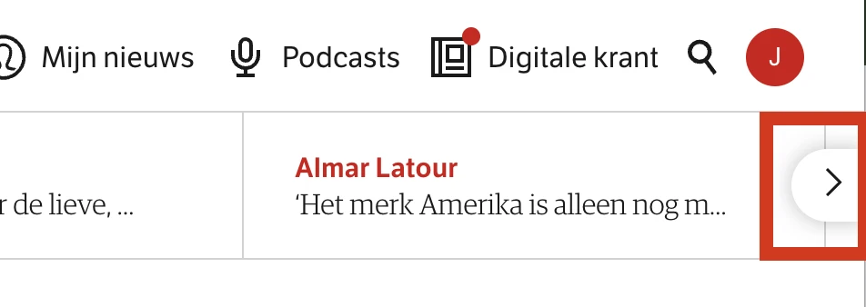
Op deze pagina, onder de header, staat extra navigatie met knoppen met pijliconen. Deze iconen hebben geen tekstalternatief. Wanneer een knop alleen uit een afbeelding bestaat, moet de alternatieve tekst de functie van de knop beschrijven. Dit probleem hangt ook samen met succescriterium 4.1.2, omdat de knoppen geen toegankelijke namen hebben. Dit probleem komt voor onder de kop “Zoomstory” bij een interactieve afbeelding met knoppen.
Voeg de beschrijving toe via een alt-tekst bij het img-element,een title-element bij een svg , een aria-label of een visueel verborgen tekst die beschikbaar is voor schermlezers.
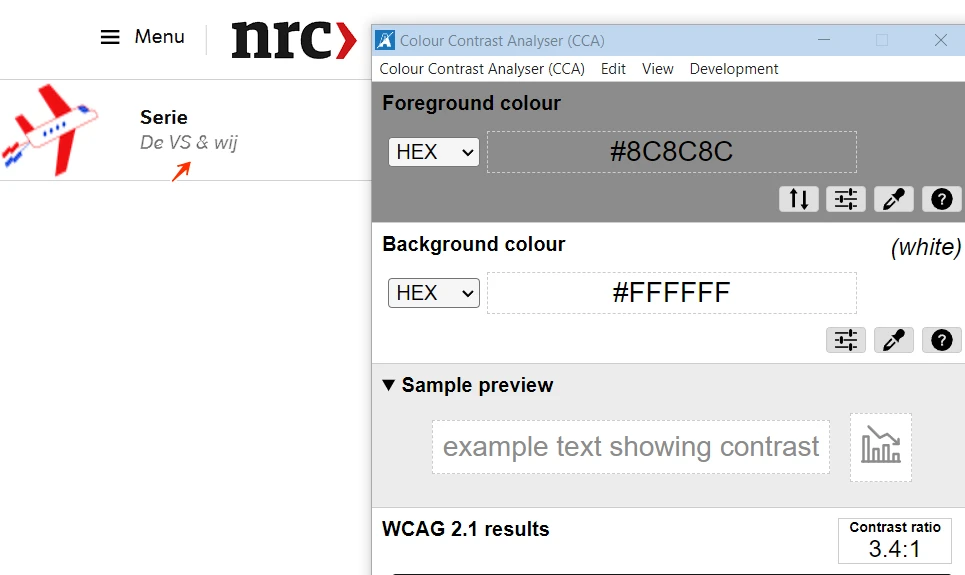
Op deze pagina staat grijze tekst (#8C8C8C) “De VS & wij” op een witte achtergrond. De contrastratio is te laag: 3,4:1.
Deze tekst is kleiner dan 24px en niet vetgedrukt. Daarom moet het contrast minimaal 4,5:1 zijn. Op deze pagina staat een instructie om kleurcontrast te testen: https://properaccess.nl/hoe-test-ik-kleurcontrast/.
Op deze pagina, onder de kop “Luister ook / Audio”, staat een audiobestand zonder transcriptie. Er moet een alternatief beschikbaar zijn voor bezoekers die het geluid niet kunnen horen: een volledige transcriptie.
Voeg een transcriptie toe bij het audiobestand. Dit kan direct op de pagina (eventueel visueel verborgen met een mogelijkheid om de tekst te tonen), op een aparte pagina of in een toegankelijke pdf, mits de link ernaartoe direct bij het audiobestand staat.
Link naar pagina: https://www.nrc.nl/nieuws/2024/12/21/testpagina-voor-digitale-toegankelijkheid-deel-1-a4913685
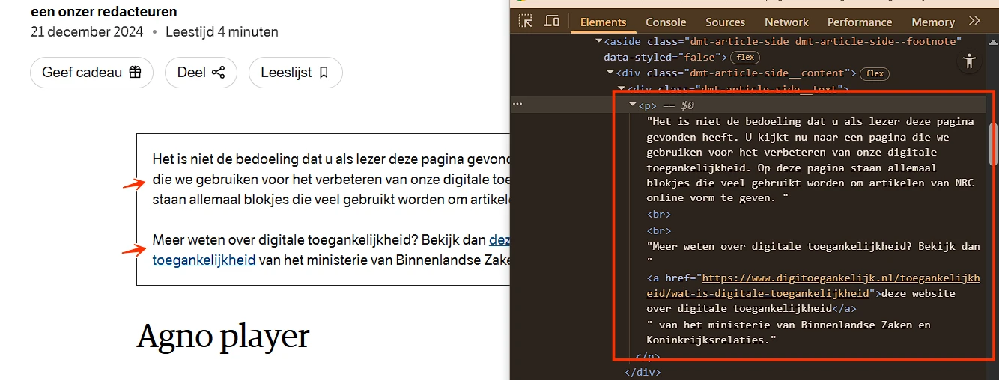
Op deze pagina, boven “Agno player”, is een tekstblok met twee alinea’s onjuist gemarkeerd als één p-element. Visueel bestaat de tekst uit meerdere alinea’s (tekstblokken met witruimte ertussen). Deze structuur moet ook in de code aanwezig zijn.
Dit probleem komt voor op de pagina: https://www.nrc.nl/nieuws/2024/12/21/testpagina-voor-digitale-toegankelijkheid-deel-2-a4912961 boven de tekst “Meer weten over digitale … Zaken en Koninkrijksrelaties.”
Plaats elke alinea in een eigen p-element. Het aantal alinea’s dat visueel zichtbaar is, moet overeenkomen met het aantal p-elementen in de code.
Op deze pagina wordt onder de kop “Agno player” een video weergegeven. De video bevat tekst en logo’s op verschillende momenten (bijvoorbeeld rond 0:01). Er is geen media-alternatief of audiodescriptie beschikbaar. Hierdoor is de visuele informatie (tekst en logo’s) niet toegankelijk voor blinde gebruikers.
Voor succescriterium 1.2.3 kan dit worden opgelost met een geschreven tekst (media-alternatief). Voor succescriterium 1.2.5 is dat niet voldoende; hiervoor moet een audiobeschrijving worden toegevoegd die de visuele elementen in de video beschrijft, zoals namen, functies, logo’s en teksten.
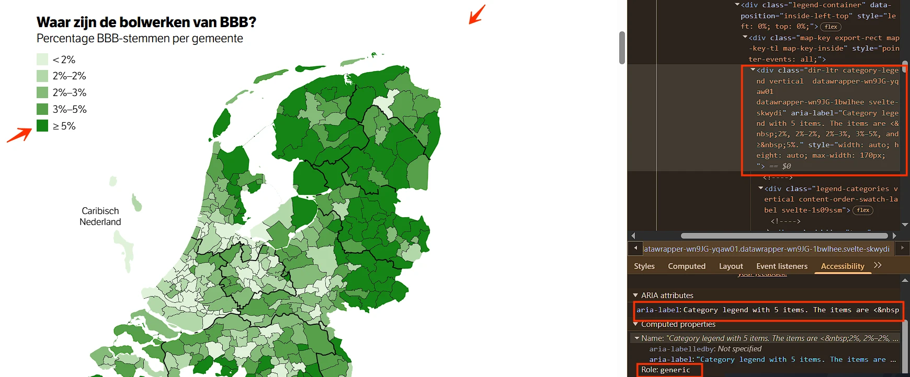
Op deze pagina, onder de kop “Waar zijn de bolwerken van BBB?”, staat een interactieve kaart met een legenda. Deze legenda heeft een aria-label-attribuut met de tekst “Category legend with 5 items. The items are < 2%, 2%–2%, 2%–3%, 3%–5% and ≥ 5%.” Het aria-label-attribuut mag echter niet worden gebruikt in een div-element. Het wordt dan niet voorgelezen. Dit probleem doet zich voor bij de kaart zelf.
Dit is op te lossen met een alternatief dat wél wordt ondersteund, bijvoorbeeld door een tekstueel element toe te voegen (eventueel visueel verborgen).
Op deze pagina, onder de kop “Waar zijn de bolwerken van BBB?”, staat een kaart met een legenda. In de kaart wordt alleen kleur gebruikt om informatie te geven. Zie bijvoorbeeld het groen in de legenda. Deze kaart is niet bedoeld voor navigatie en valt daardoor onder de uitzondering van de wet.
Alleen als kleuren zichtbaar zijn en goed van elkaar te onderscheiden, is duidelijk welke balk / lijn bij welke categorie hoort.
Gebruik naast kleur ook een extra onderscheid, zoals arcering, patronen of datalabels.
Op deze pagina staat een kaart zonder een tekstalternatief. Deze kaart is niet bedoeld voor navigatie en valt daardoor onder de uitzondering van de wet.
Overheidsorganisaties hoeven kaarten en kaarttoepassingen niet toegankelijk te maken als ze niet nodig zijn voor navigatie. Er is echter één uitzondering op deze regel: de informatie die op de kaart wordt getoond, moet ook in tekst op de pagina staan.
Zorg ervoor dat de informatie die met de kaart wordt overgedragen, ook in tekst op de pagina voorkomt.
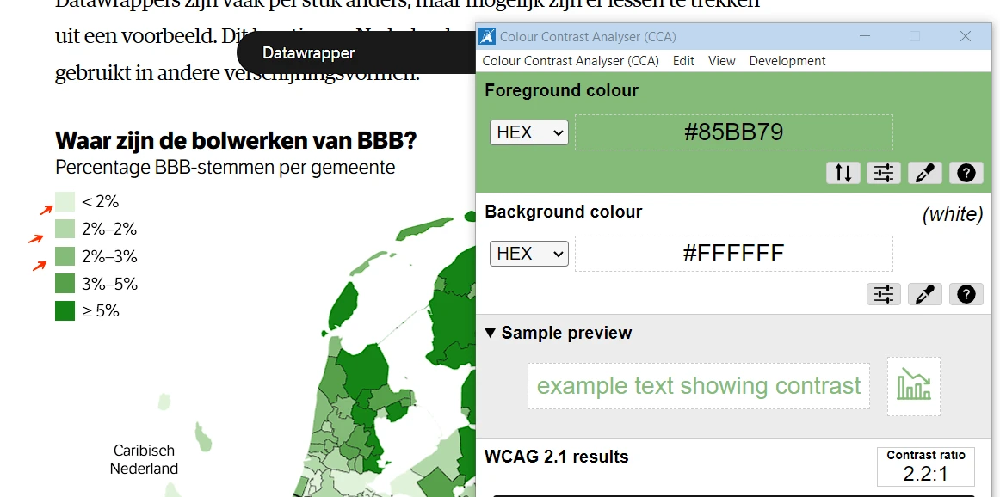
Op deze pagina, onder de kop “Waar zijn de bolwerken van BBB?”, staat een kaart met een legenda. Sommige kleuren hebben een lage contrastverhouding, bijvoorbeeld lichte tinten groen op een witte achtergrond, zoals (#85BB79). De contrastverhouding is 2,2:1. Deze kaart is niet bedoeld voor navigatie en valt daardoor onder de uitzondering van de wet.
Zorg ervoor dat het contrast tussen de informatie-elementen op de kaart en de legenda minimaal 3,0:1 is. Controleer daarbij alle gebruikte kleuren
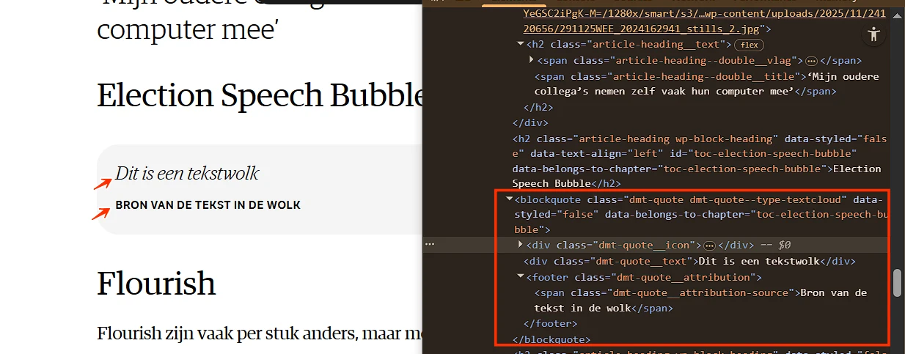
Op deze pagina, onder de kop “Election Speech Bubble”, is de tekst “Bron van de tekst in de wolk” geen citaat, maar is deze geplaatst in een blockquote-element.
Dit probleem komt voor op de pagina https://www.nrc.nl/nieuws/2024/12/21/testpagina-voor-digitale-toegankelijkheid-deel-2-a4912961 bij “Crisp In het november 2024 in een bericht aan de investeerders”.
Verplaats de tekst “Bron van de tekst in de wolk” uit het blockquote-element.
title van iframe is niet beschrijvendOp deze pagina, onder de kop “Flourish”, staat een iframe. Het title-attribuut “Interactive or visual content” beschrijft niet de inhoud en het type van het iframe.
Iframe-elementen moeten een duidelijke, unieke beschrijving hebben (meestal via het title-attribuut) waarin staat welk type inhoud wordt getoond (bijvoorbeeld een tabel, een podcast of een video) en waar de inhoud over gaat.
Geef het iframe-element een uniek en beschrijvend ‘title’-attribuut waarin zowel het type als het onderwerp terugkomt, bijvoorbeeld:
<iframe title=”Tabel - Olympische Spelen…”>
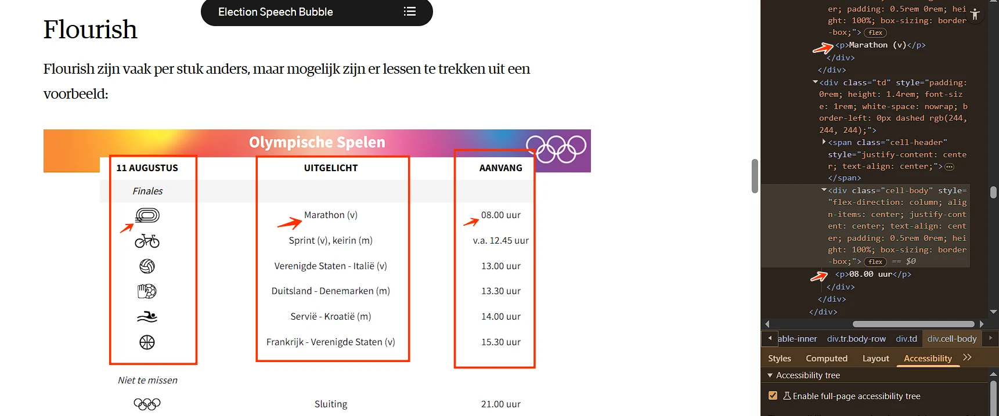
Op deze pagina, onder de kop “Flourish”, staat een iframe met een datatabel. De tabelmarkup ontbreekt. Daardoor kan een schermlezer de relatie tussen de verschillende cellen niet begrijpen.
Zorg ervoor dat tabellen met gegevens met de juiste HTML-code worden gemarkeerd. Meer informatie over tabellen is te vinden op: https://www.w3.org/WAI/tutorials/tables/.
alt-attribuutOp deze pagina, onder de kop “Flourish”, staat een iframe met afbeeldingen. Deze afbeeldingen zijn toegevoegd met een img-element, maar het alt-attribuut ontbreekt.
Een img-element moet altijd een alt-attribuut hebben. Bij decoratieve afbeeldingen is de juiste waarde alt="" en moet een passende alternatieve tekst worden toegevoegd.
Voeg het alt-attribuut toe aan elk img-element. Laat de waarde leeg bij decoratieve afbeeldingen (alt=””) en voeg een beschrijvende alternatieve tekst toe bij informatieve afbeeldingen.
Op deze pagina, onder de kop “Foto”, staat een afbeelding. Het tekstalternatief van de afbeelding dupliceert de tekst onder de afbeelding: “A supermarket in Los Angeles. American consumers complain about the sharp rise in food prices.”
Dit probleem komt ook voor onder de kop “Fotoslider”. De schermlezer leest hierdoor dezelfde informatie twee keer voor.
Laat het alt-attribuut leeg om herhaling van de tekst te voorkomen (alt=””).
Op deze pagina, onder de kop “Foto voor-na”, staat een afbeelding waarop een slider kan worden bewogen. Deze slider is niet toegankelijk via het toetsenbord.
Zorg ervoor dat de slider via het toetsenbord kan worden bediend.
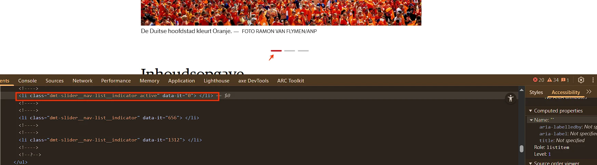
Op deze pagina, onder de kop “Fotoslider”, staat een slider met afbeeldingen. Onder de slider staan grijze iconen die het nummer en de huidige dia weergeven. Deze informatie is niet aanwezig in de HTML-code. Hierdoor kan een schermlezer deze informatie niet doorgeven.
Maak de informatie beschikbaar, bijvoorbeeld met visueel verborgen tekst bij het actieve icoontje (bijvoorbeeld: ‘Huidige dia’).
Op deze pagina, onder de kop “Fotoslider”, staat een slider met afbeeldingen. Onder deze slider staan knoppen met grijze iconen. Deze knoppen hebben niet de juiste toegankelijke rol en naam.
Elk HTML-element heeft standaard een rol. Schermlezers en andere hulpmiddelen moeten de correcte rol van elk element kennen, zodat ze de functie goed kunnen overbrengen..
Zorg ervoor dat de knoppen de juiste toegankelijke rol hebben door button-element te gebruiken. Geef daarnaast een toegankelijke naam via knoptekst, een aria-label of een andere passende techniek.
Op deze pagina, onder de kop “Fotoslider”, staan knoppen met grijze (#C5C5C5) iconen op een witte achtergrond. De contrastverhouding van 1,7:1 is te laag.
Zorg voor een minimaal contrast van 3,0:1.
Op deze pagina, onder de kop “Olympische Spelen”, staat een lege h3-kop. Dit kan een probleem veroorzaken voor schermlezergebruikers die navigeren via de lijst met koppen.
Verwijder de lege kop of voeg een betekenisvolle tekst toe.
Link naar pagina: https://www.nrc.nl/the-new-york-times/
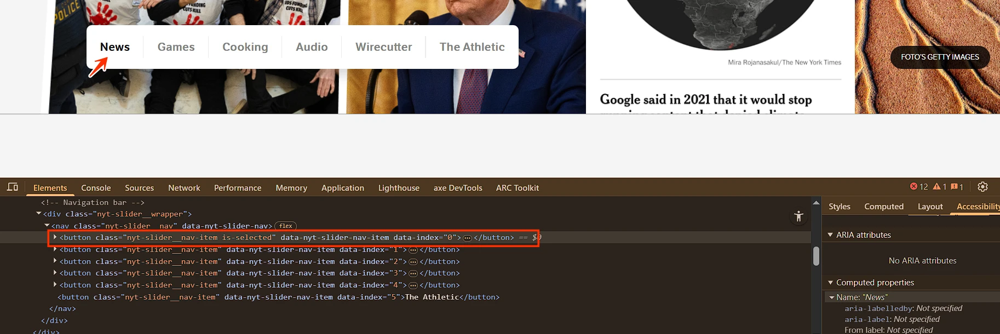
Op deze pagina, onder de kop “Wat krijg ik van The New York Times?”, staat een slider met knoppen. De huidige (actieve) knop wordt alleen visueel weergegeven; er is geen informatie beschikbaar in de HTML-code. Hierdoor kan een schermlezer deze informatie niet doorgeven.
Maak de informatie toegankelijk door::
<span class=”sr-only”>Huidige slide</span>.aria-current-attribuut: voeg aria-current=”true” toe aan de knop van de huidige slide.Op deze pagina, onder de kop “Wat krijg ik van The New York Times?”, staat een slider met knoppen. Niet-actieve knoppen hebben grijze (#8C8C8C) tekst op een witte achtergrond, bijvoorbeeld “Games”. De contrastratio is te laag: 3,4:1.
Deze tekst is kleiner dan 24px en niet vetgedrukt. Daarom moet het contrast minimaal 4,5:1 zijn.
Op deze pagina staat een instructie om kleurcontrast te testen: https://properaccess.nl/hoe-test-ik-kleurcontrast/.
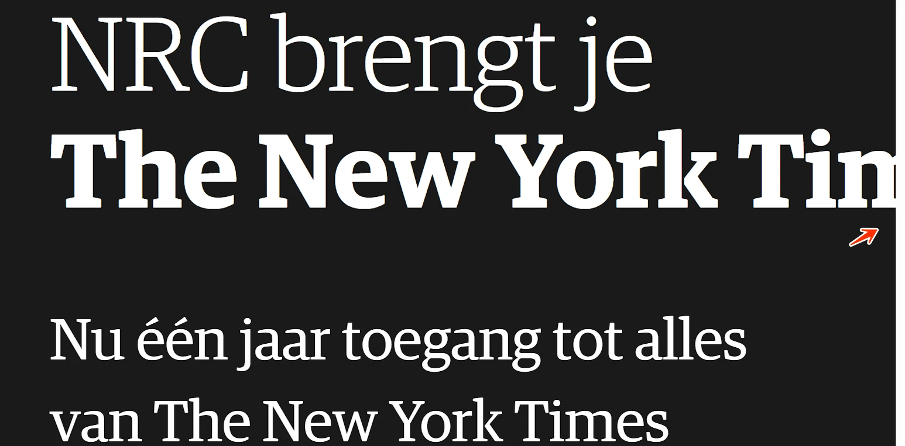
Wanneer deze pagina wordt bekeken bij een schermresolutie van 1280 x 1024 pixels en tot 400% zoom, verdwijnen de kop “NRC brengt je The New York Times” en de tekst onder de kop “Waarom The New York Times?” gedeeltelijk.
Zorg ervoor dat alles nog werkt en leesbaar is als je inzoomt tot 400% op een scherm van 1280 x 1024 pixels.
Link naar pagina: https://www.nrc.nl/search/?size=10&offset=0&query=sport
Dit probleem hangt ook samen met succescriterium 2.5.3, omdat de zichtbare tekst “Zoek op trefwoord of naam” niet voorkomt in een toegankelijke naam en het invoerveld daardoor niet met spraakbediening kan worden bediend.
Geef het invoerveld een toegankelijke naam door een van de volgende technieken te gebruiken:
<input aria-label=”Zoek”><input aria-labelledby=”id”> en <label><span id=”id”>Zoek</span></label>. Het span-element is verborgen met display:none. Ondanks deze implementatie kan deze oplossing werken.
Meer informatie over deze techniek is te vinden op:
https://www.w3.org/WAI/ARIA/apg/practices/names-and-descriptions/#namingtechniques<svg><title>Zoek</title></svg> kan ook worden gebruikt.Op deze pagina staat een knop “Toon filters” die de filters opent. Alle selectievakjes en keuzerondjes binnen de filters hebben geen toegankelijke naam. Hierdoor is voor gebruikers van een schermlezer niet duidelijk wat de bestemming of de functie van de desbetreffende elementen is.
Geef de elementen een toegankelijke naam, bijvoorbeeld via knoptekst, een aria-label of een andere geschikte techniek.
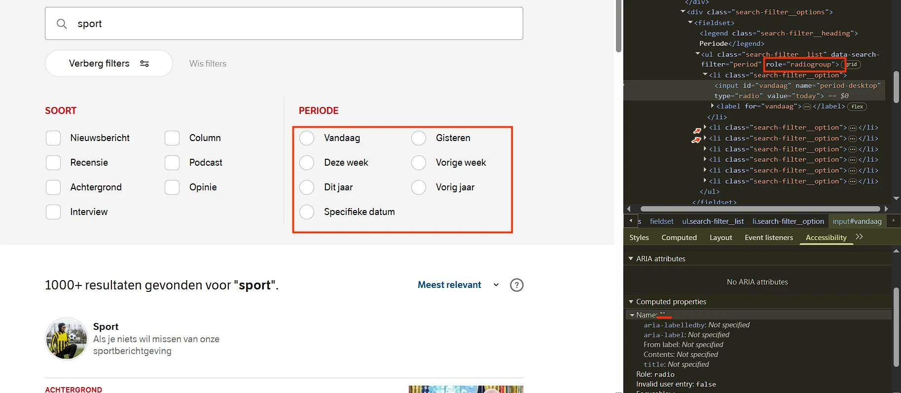
Op deze pagina staat een knop “Toon filters” die de filters opent. Onder “Periode” zijn filters met keuzerondjes in lijsten geplaatst, maar het ouderelement van de lijst heeft niet de juiste rol.
De li-elementen zijn in dit geval overbodig. Er is al een groepering aangebracht met een fieldset en legend.
Op deze pagina staat een knop “Toon filters” die de filters opent. De randen van alle selectievakjes en keuzerondjes zijn grijs (#C2C2C2) op een lichtgrijze achtergrond (#F4F4F4). De contrastratio is te laag: 1,6:1.
De randen van interactieve elementen, zoals invoervelden, moeten minimaal een contrast van 3,0:1 hebben ten opzichte van de achtergrond.
Op deze pagina staat in de filters een keuzerondje “Specifieke datum”, waarmee de invoervelden voor de datum worden geopend en gesloten. Het aria-expanded-attribuut is onjuist gebruikt op deze plek.
Verwijder dit attribuut.
Op deze pagina staat een keuzelijst (select-element) “Meest relevant”. De toegankelijke naam ontbreekt. Hierdoor is de keuzelijst niet toegankelijk.
Dit probleem hangt ook samen met succescriterium 2.5.3, omdat de zichtbare tekst niet voorkomt in een toegankelijke naam en het select-element daardoor niet met spraakbediening kan worden bediend. Dit probleem komt voor op de pagina https://www.nrc.nl/krant/2025/11/14/#101 bij het select-element “Voorpagina”.
Geef het select-element een toegankelijke naam.
select-element heeft onvoldoende contrast bij toetsenbordfocusOp deze pagina staat een keuzelijst (select-element) “Meest relevant”. Wanneer dit element toetsenbordfocus krijgt, is de contrastverhouding tussen de grijze rand (#D0D0D0) en de witte achtergrond 1,5:1.
De randen van interactieve elementen, zoals invoervelden, moeten minimaal een contrast van 3,0:1 hebben ten opzichte van de achtergrond.
Op deze pagina staat een knop met een “?”-icoon die een dialoogvenster opent en sluit. Hoewel de open of gesloten status visueel duidelijk is, wordt deze niet programmatisch doorgegeven aan schermlezers.
Bezoekers die de pagina kunnen zien, kunnen herkennen of de extra inhoud open of gesloten is. Dit geldt echter niet voor blinde of slechtziende bezoekers die schermuitleesprogramma’s gebruiken.
Voeg een aria-expanded-attribuut toe aan de knoppen waarmee het dialoogvenster wordt geopend en gesloten.
Op deze pagina staat een knop met een “?”-icoon die een dialoogvenster opent. Dit dialoogvenster heeft geen correcte rol en geen toegankelijke naam. Schermlezers kunnen daardoor niet aangeven dat het om een dialoogvenster gaat en wat de inhoud ervan is.
Dit probleem komt onder andere voor op de pagina:
Voeg twee attributen toe aan het dialoogvenster: een aria-label met een duidelijke beschrijving van de inhoud (aria-label="Beschrijving van de inhoud") en role="dialog".
Op deze pagina staat een knop met een “?”-icoon die een dialoogvenster opent. Op dit moment kan de toetsenbordfocus uit het geopende dialoogvenster ontsnappen en verplaatsen naar de onderliggende paginacontent.
Bij dit soort dialoogvensters moet de toetsenbordfocus correct worden ingesteld. Wanneer het venster actief is, moet de toetsenbordfocus binnen het venster blijven en mag deze niet op de onderliggende pagina terechtkomen.
Dit is op te lossen met Javascript door de focus binnen het venster te houden totdat op de sluitknop is geklikt of op de ESC-toets is ingedrukt. Als alternatief kan het venster automatisch worden gesloten zodra de focus het venster verlaat.
Op deze pagina staat een knop met een “?”-icoon die een dialoogvenster opent. Op een klein scherm bedekt dit dialoogvenster een deel van de pagina. Interactieve elementen onder dit dialoogvenster kunnen nog steeds toetsenbordfocus ontvangen, ook al zijn ze visueel bedekt.
Zorg ervoor dat alleen zichtbare elementen toetsenbordfocus kunnen krijgen.
Op deze pagina is de volgorde van HTML-elementen binnen artikelen niet logisch. De tekst staat boven de koppen; zo staat boven de kop “NOS stopt met ‘Studio Voetbal’ en ‘Andere Tijden’” de tekst “Nieuws”. De huidige volgorde is: tekst, kop, tekst.
Wanneer deze artikelen van boven naar beneden worden voorgelezen door een schermlezer, is niet duidelijk welke inhoud (afbeelding en/of tekst) bij welke kop hoort. Dit komt doordat de koppen niet bovenaan staan in de code van elk artikel. Dit kan verwarrend zijn voor gebruikers van een schermlezer.
Dit is op te lossen door alle inhoud die bij een bepaalde kop hoort in de code onder die kop te plaatsen. Dit zorgt voor een logische structuur. De visuele vormgeving mag afwijken.
Op deze pagina verwijst de skiplink naar “1000+ resultaten gevonden voor ‘sport’”, terwijl er boven die doel nog unieke inhoud staat.
De skiplink moet verwijzen naar (het begin van) de unieke content op de pagina, zodat herhalende of niet-essentiële onderdelen kunnen worden overslaan.
Zorg ervoor dat de skiplink verwijst naar het juiste startpunt van de unieke content op de pagina.
Op deze pagina staat een instructie om de skiplink te testen: https://properaccess.nl/sc-2-4-1-wat-betekent-blokken-overslaan-in-wcag/.
Op deze pagina ontbreekt op een klein scherm de tekstalternatief bij een filtericoon. Wanneer een knop uitsluitend uit een afbeelding bestaat, moet de alternatieve tekst de functie van de knop beschrijven. Dit probleem hangt ook samen met succescriterium 4.1.2, omdat de knop geen toegankelijke naam heeft.
Dit probleem komt onder andere voor op de pagina:
Voeg de beschrijving toe via een alt-tekst bij het img-element, een title-element bij een svg , een aria-label of een tekst die visueel verborgen is maar toegankelijk blijft voor schermlezers.
Op deze pagina staat op een klein scherm een knop met een filtericoon. Deze knop opent een modaal dialoogvenster met filters. Dit dialoogvenster heeft geen correcte rol en geen toegankelijke naam. Schermlezers kunnen hierdoor niet doorgeven dat het om een dialoogvenster gaat en wat de inhoud ervan is.
Voeg twee attributen toe aan het dialoogvenster: een aria-label met een duidelijke beschrijving van de inhoud (aria-label="Beschrijving van de inhoud") en role="dialog".
Wanneer deze pagina wordt bekeken met een schermresolutie van 1280 x 1024 pixels en wordt ingezoomd tot 400%, is het dialoogvenster met filters niet zichtbaar en niet bedienbaar.
Zorg ervoor dat alle functionaliteiten bruikbaar blijven bij inzoomen tot 400% op een scherm van 1280 x 1024 pixels.
###Datumvelden zijn niet met toetsenbord te bedienen
Op deze pagina staat in de filters een keuzerondje “Specifieke datum” waarmee de invoervelden voor de datum worden geopend en gesloten. Op een klein scherm zijn de datumvelden en de datepicker niet met het toetsenbord te bedienen.
Zorg ervoor dat alle invoervelden met het toetsenbord kunnen worden bediend.
Onze rapporten zijn anders. Bij het bespreken van de gevonden problemen volgen wij niet de structuur van de norm, maar die van jouw website of app. Hierdoor kun je gewoon per pagina of scherm aan de slag gaan. Wel zo makkelijk! Je vindt verderop een overzicht van alle pagina’s met problemen.
We geven je bij elk gevonden issue een paar voorbeelden, maar niet een complete lijst. Controleer zelf of het probleem ook nog op andere plekken voorkomt. Zie het rapport als een leidraad.
Dit onderzoek laat zien in hoeverre de website op dit moment voldoet aan WCAG 2.2, niveau A en AA. WCAG staat voor Web Content Accessibility Guidelines. Dit is de internationale norm voor digitale toegankelijkheid. De Europese norm EN 301 549 bevat alle eisen van WCAG op niveau A en AA.
In dit rapport hebben we korte beschrijvingen van de succescriteria uit de norm opgenomen, met een algemene uitleg erbij. Wil je ze helemaal lezen? Bekijk dan de documentatie van WCAG.
We gebruiken de onderzoeksmethode WCAG-EM van het W3C. Het proces ziet er als volgt uit:
Het grootste deel van het onderzoek doen we met de hand. Voor een deel van de toegankelijkheidseisen gebruiken we automatische tools als ondersteuning, zoals axe-core en Chrome Developer Tools.
Dit rapport helpt je om de toegankelijkheid van je website te verbeteren. Maar let op: het is geen definitieve, volledige lijst van alle aanwezige toegankelijkheidsproblemen. Dat zit zo:
Ten eerste is het onderzoek gebaseerd op een steekproef. Die is op een betrouwbare manier genomen, en de meeste problemen zullen daardoor zeker aan het licht komen. Toch kan een probleem net buiten de steekproef vallen. Bij een volgend onderzoek kan het wel ontdekt worden.
We beoordelen vanuit het principe van falsificatie. Dat houdt in dat we proberen te bewijzen dat iets niet waar is, in plaats van te bevestigen dat het klopt. ‘Voldoet’ betekent daarom dat we geen reden hebben gevonden om een punt af te keuren. Maar als we later wél een reden vinden, kan het alsnog worden afgekeurd.
Het komt voor dat de beoordeling van een succescriterium op detailniveau verandert. De norm beschrijft namelijk niet élk mogelijk scenario. Samen met andere onderzoeksbureaus overleggen we hoe we met bepaalde situaties omgaan. Zo kan iets dat nu wordt afgekeurd, soms bij een volgend onderzoek worden goedgekeurd en andersom.
Ten slotte kan het gebeuren dat bij het oplossen van een probleem onbedoeld een nieuw toegankelijkheidsprobleem ontstaat. Dat komt dan bij een volgend onderzoek pas naar voren.
Alle gevonden toegankelijkheidsproblemen staan onder Gevonden problemen. Je kunt de bevindingen filteren op:
Je kunt je voortgang op twee manieren bijhouden:
Bij elke bevinding verschijnt een link-icoon wanneer je er met de muis overheen gaat. Klik op dit icoon om de directe link naar die bevinding te kopiëren. Je kunt deze link plakken in een e-mail of chatbericht, bijvoorbeeld om een vraag te stellen aan Proper Access over een specifiek punt.